Sein Name ist auf ihre Stirn geschrieben
Die Macht des Heiligsten Namens Jesu im endzeitlichen Kampf
Jesus, Du Quelle aller Güte, Du jeder Freude Hoffnungskraft, Du bist der Ursprung aller Schönheit, des Herzens tiefste Leidenschaft.
Jesus, auf den die Büßer hoffen; wie gütig bist Du dem, der strebt, wie gut zu allen, die Dich suchen; was erst der Findende erlebt?
Jesus, Du wahre Lebenssonne für jeden, der nach Dir verlangt, der nach Dir sucht auch unter Tränen und um des Himmels Antwort bangt.
Jesus, Du unser Herr und Heiland, Dein Licht schenkt uns den neuen Tag, die Welt ist neu in Dir geborgen, die Finsternis dem Licht erlag.
Jesus, Du Spross der Jungfrau-Mutter, Du unsrer Liebe schöner Glanz, Dir sei der Dank, Dir Lob und Ehre im Reich der Seligen einst ganz. Amen.
Aus dem Hymnus zur Laudes am Namen-Jesu-Fest
Diese Broschüre der Marianischen Priester- und Laienbewegung stellt die Macht des Heiligsten Namens Jesu vor: die Zeugnisse zahlreicher Heiliger, die Anrufung und Anbetung dieses Namens im Alltag, seine heilende und befreiende Kraft sowie seine Bedeutung im endzeitlichen Kampf, den die Geheime Offenbarung des hl. Johannes beschreibt.
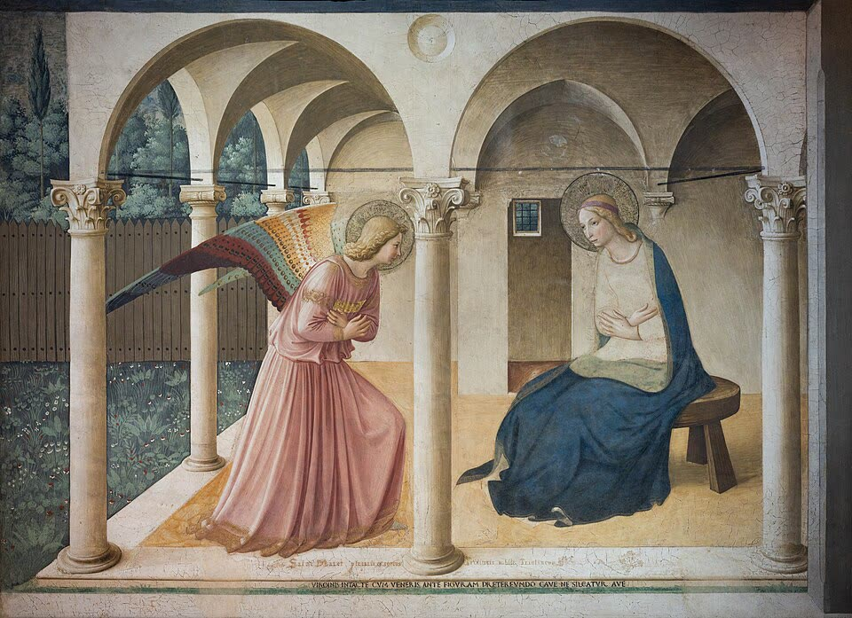
Verkündigung des Erzengels Gabriel an Maria
Geleitwort
Du sollst Ihm den Namen Jesus geben. Er wird groß sein und Sohn des Allerhöchsten genannt werden. Lk 1,31-32
Der Name Jesus, ist der Name, mit der Gott selbst, die zweite Göttliche Person der Heiligsten Dreifaltigkeit, in Seiner menschlichen Natur genannt werden wollte. Dieser Name wurde uns vom Himmel gebracht, denn Er erscholl hier auf Erden zum ersten Mal aus dem Mund des Erzengels Gabriel. Dieser Name ist der Ausdruck des Sinnes und des Zieles der Menschwerdung, nämlich die Erlösung, denn Jesus bedeutet im Hebräischen Erlöser. Dieser Name wurde dann auch auf das Holz des Kreuzes auf Golgotha geschrieben und ziert seither alle Kreuze und Kreuzdarstellungen.
Er erniedrigte Sich und war gehorsam bis zum Tod, bis zum Tod am Kreuze. Darum hat Gott Ihn über alle erhöht und Ihm den Namen verliehen, der größer ist als alle Namen, damit alle im Himmel, auf der Erde und unter der Erde ihre Knie beugen vor dem Namen Jesu und jeder Mund bekennt: Jesus Christus ist der Herr – zur Ehre Gottes, des Vaters. Phil 2,8-11
Erlösung bedeutet Teilnahme an der göttlichen Natur durch die Erlösergnade Christi. Es ist die Glückseligkeit in Gott schon hier auf Erden im Leben der Gnade und einst in der beseligenden Anschauung Gottes. Im Buch des Propheten Habakuk steht diese schöne Aussage in der lateinischen Vulgata-Version: Exultabo in Deo Iesu meo, (Hab 3,18) d. h. Ich frohlocke in Gott, meinem Jesus (= Retter). Unsere ewige Glückseligkeit wird darin bestehen, in Jesus, unserem Gott und Retter, d. h. durch Ihn im Dreifaltigen Gott zu frohlocken.
Wir werden im Himmel einen neuen Namen erhalten (vgl. Offb 2,17) und auf die Stirn der Geretteten wird der Name Gottes geschrieben, (vgl. Offb 3,12) nämlich der Name Jesu und der Name des Vaters. (Vgl. Offb 14,1) Schon im Alten Bund hat Gott uns verheißen: Jeden, der nach Meinem Namen benannt ist, habe Ich zu Meiner Ehre erschaffen, geformt und gemacht. (Jes 43,7) Dieser Name, in welchem Gott die Erwählten, d. h. jene, die letztlich gerettet werden, geformt hat, ist der Name unseres Erlösers. Der hl. Paulus lehrt, dass der neue Mensch nach dem Bild dessen erneuert wird, der ihn erschaffen hat. (Vgl. Kol 3,10)
Die Sendung der Kirche besteht darin, die Erlösung Christi und damit Seinen Namen bis an die Grenzen der Erde zu tragen, wie es der Herr vom neubekehrten Paulus sagte: Er soll Meinen Namen tragen vor die Heiden und die Könige und die Kinder Israels. (Apg 9,15) Das ist nämlich der Wille Gottes, dass alle an den Namen Seines Sohnes glauben. (Vgl. 1 Joh 3,23) Es ist nämlich den Menschen kein anderer Name gegeben, in welchem sie gerettet werden können, (Apg 4,12) und wer den Namen des Herrn Jesus Christus anruft, wird gerettet. (Vgl. Apg 2,21)
Die Aufgabe der Christen besteht darin, Gott in dem Namen „Christ" zu verherrlichen. (Vgl. 1 Petr 4,16) Aus der Frühzeit der Kirche überliefert uns Klemens von Alexandrien (Anfang des 3. Jh.) diese bewegende Aussage über die Würde der Christen:
Alle wahren Gläubigen sind edel und gottähnlich und des Christennamens würdig, den sie wie eine königliche Krone tragen. Quis div. salv. 36,1
Die Aufgabe des Christen besteht aber auch darin, den Namen Jesu vor den Menschen zu bekennen (vgl. Mt 10,32) und danach zu verlangen, dass alle Zungen bekennen, dass Jesus der Herr ist. (Phil 2,11) Um dieses Bekenntnisses willen werden die Kirche und die echten Christen von der Welt gehasst, wie es uns der Herr selber sagte: Ihr werdet um Meines Namens Willen von allen gehasst werden; wer aber bis zum Ende standhaft bleibt, der wird gerettet. (Mk 13,13) Jedoch soll es für einen wahren Christen eine Freude sein, für den Namen Jesu Schmach zu erleiden. (Apg 5,41)
Jeder wahre Christ soll sich bei allem was er tut nach diesem Psalmwort leiten lassen: Nicht uns, o Herr, bring zu Ehren, nicht uns, sondern Deinen Namen. (Ps 115,1) Wenn wir mit der Hilfe Gottes auf diese Weise denken und handeln, dann wird uns Gott die Gnade schenken, dass wir beim Verlassen dieses irdischen Lebens das unaussprechliche Glück haben werden, mit unserem Herzen und Mund den heiligsten, mächtigsten und süßesten aller Namen auszusprechen, den Namen Jesus, oder mit dem heiligen Philipp Neri ausrufen: Mein Jesus! Jesus, sei mir Jesus!
25. Januar 2021, am Fest der Bekehrung des Apostels Paulus
+ Athanasius
Schneider, Weihbischof der Erzdiözese der Heiligen Maria in Astana
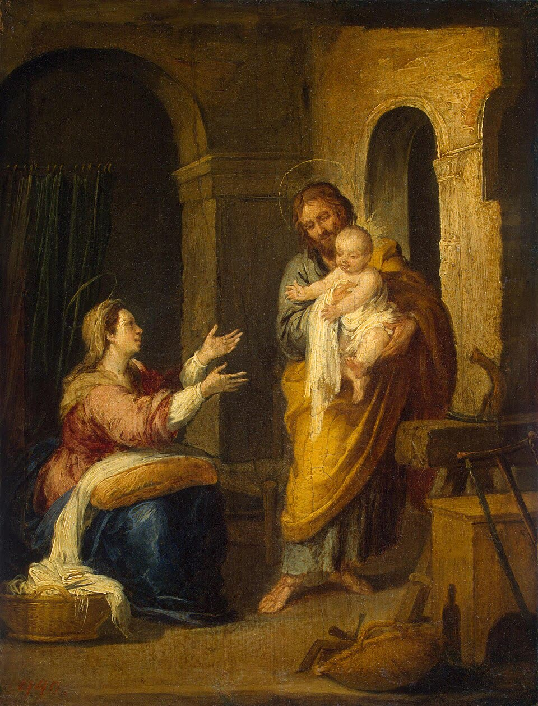
Die Heilige Familie: Maria, Josef und das Jesuskind
Zeugen der Macht des Heiligsten Namens Jesu
Seit den Anfängen der Kirche ist die unergründliche Macht und Weisheit, die im Heiligsten Namen Jesu verborgen sind, als wunderbar und einzigartig erkannt worden. In dieses Geheimnis des Göttlichen Namens sind gewiss die Gottesmutter Maria und der hl. Josef am tiefsten eingedrungen. Denn Gott hat ihnen Seinen eingeborenen Sohn anvertraut, um der ganzen Menschheit Ströme von Gnaden aus dem Herzen des Erlösers zu vermitteln. Daher dürfen wir mit kindlichem Vertrauen das Geschenk der Liebe zum Heiligsten Namen Jesus aus ihren Händen erbitten. Denn Maria und Josef sind unsere sichersten Führer auf dem Weg zum immerwährenden Herzensgebet.
Der hl. Ignatius sprach sehr gerne den Namen Jesus aus. Von ihm wird folgendes erzählt: Als sich die Apostel untereinander stritten, wer von ihnen der Größte im Himmelreich sein werde, kam Jesus mit ihnen nach Kafarnaum, rief dort einen bei seiner Mutter unter der Haustür stehenden 4-jährigen Knaben zu sich, nahm ihn bei der Hand und sprach zu den Aposteln: Wenn ihr nicht umkehrt und wie die Kinder werdet, könnt ihr nicht in das Himmelreich kommen. Wer so klein sein kann wie dieses Kind, der ist im Himmelreich der Größte. (Mt 18,3ff)
Dieser Knabe Ignatius lief in späteren Jahren sehr oft an jenen Ort, wohin ihn der Heiland gerufen hatte, küsste dort den Boden und sprach zu seinen Kameraden: Seht, hier an diesem Ort hat mich Jesus in die Arme genommen.
Ignatius wuchs heran, wurde später Priester und dann Bischof in der großen Stadt Antiochien, wo zuvor der hl. Petrus sieben Jahre gewirkt hatte. Antiochien wurde bald christlich. Als nun der römische Kaiser Trajan auf seinem Kriegszug nach Antiochien kam und dort die Götzentempel leer fand, fragte er den Stadthalter, wer daran schuld sei, dass die Tempel leer stehen. Der Statthalter sprach: Der Bischof der Christen, Ignatius, ist daran schuld. Da ließ der Kaiser den greisen Bischof vor sich treten und fragte ihn: Bist du der böse Geist, der in dieser Stadt so großen Aufruhr stiftet? Ignatius antwortete: Der ist kein böser Geist, der Gott im Herzen trägt! Der Kaiser sprach: Du meinst wohl Jesus von Nazareth? Der Bischof bejahte und belehrte den Kaiser über die Torheit des heidnischen Götzendienstes. Darüber wurde dieser aufgebracht und sprach zu den Soldaten: Ad leonem, das heißt vor die Löwen. Die Christen in Rom wollten ihn befreien und seinen Tod verhindern. Doch Ignatius schrieb ihnen einen Brief und bat sie, ihm die Märtyrerkrone nicht zu entreißen. In Rom angekommen, wurde er im Amphitheater vor einer ungeheuren Volksmenge zwei hungrigen Löwen preisgegeben.
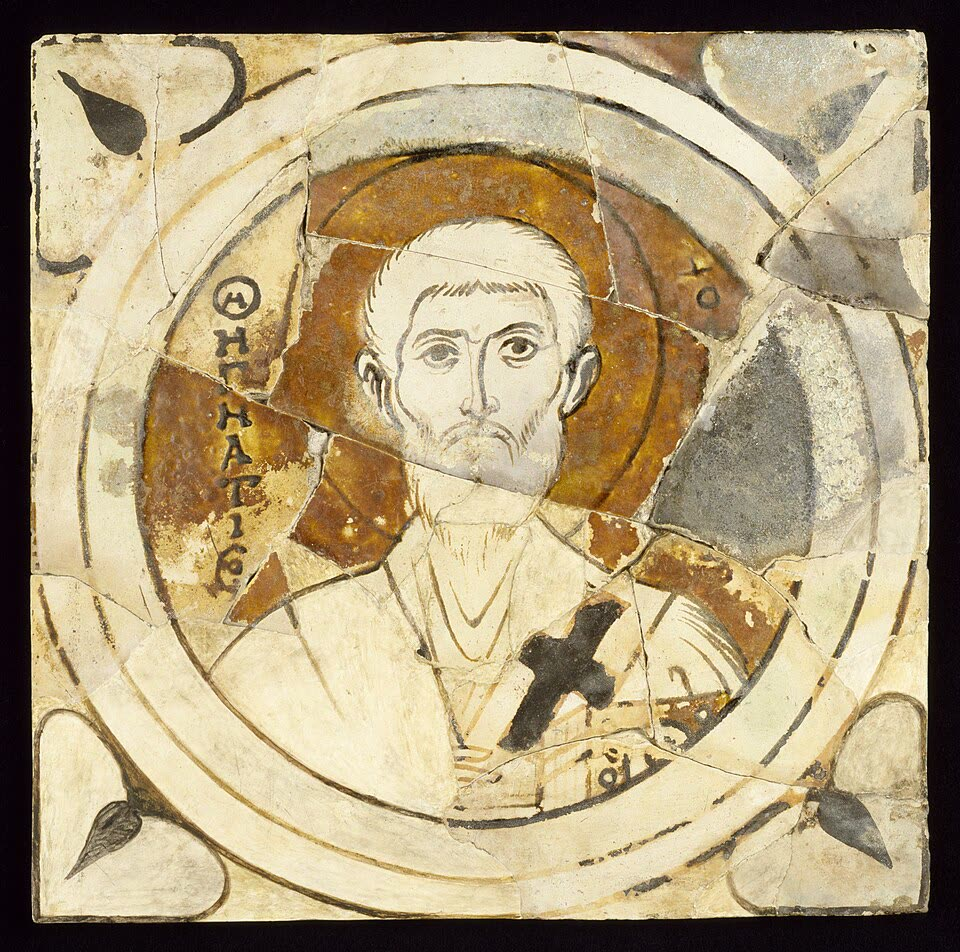
Der hl. Ignatius von Antiochien
Zuvor verrichtete der hl. Ignatius ein lautes Gebet und sprach: Der Name Jesus kann aus meinem Mund nicht weichen; und wenn auch, so kann Er nicht ausgelöscht werden aus meinem Herzen. Alle heidnischen Zuschauer wunderten sich über die Standhaftigkeit und den freudigen Tod dieses Greises. Die Löwen zerrissen ihn und ließen nur einige Gebeine und das Herz übrig. Im Herzen war der Name Jesus zu lesen, von blauen Adern gebildet. Die Reisegefährten des hl. Ignatius holten nachts aus dem Amphitheater dessen Reliquien und nahmen sie mit nach Antiochien, wo sie auf dem Altar aufbewahrt und hoch in Ehren gehalten wurden. Dies geschah im Jahre 107. Der liebe Gott hat also diesen Heiligen ausgezeichnet, weil er den Namen Jesus hoch in Ehren gehalten hatte.1
Dem hl. Gregor von Tours (538–594) gab sein Schutzengel den Rat, den Namen Jesus auf eine kleine Karte zu schreiben und diese seinem kranken Vater unter das Kopfkissen zulegen, worauf dieser schnell wieder gesund wurde.
Der hl. Leonhard von Porto Maurizio (1676–1751) empfahl eine Karte mit dem Namen Jesus an den Türen anzubringen, wodurch viele vor Krankheit und Unglück aller Art bewahrt blieben.
1 Quelle: Spirago 796, aaO.
Den hl. König Edmund von England (840–870), dem späteren Erzbischof von Canterbury, belehrte Jesus selbst über die Kraft Seines Heiligsten Namens. Als Edmund eines Tages allein unterwegs war, erschien ihm ein wunderschöner Knabe, der ihn fragte: Edmund, kennst du Mich nicht? Edmund verneinte. Der Knabe sagte nun zu ihm: Schau Mich an und du wirst erkennen, wer Ich bin. Edmund blickte das Kind genau an und sah nun auf der Stirne die leuchtenden Buchstaben INRI Iesus Nazarenus Rex Iudaeorum (Jesus von Nazareth, König der Juden). Darauf sagte das Kind: Nun weißt du, wer Ich bin. Du siehst ja Meinen Namen. Präge Ihn dir ins Herz ein. Schreibe Ihn jeden Abend auf deine Stirn, indem du ein Kreuzzeichen machst und dabei die Worte sprichst: Jesus von Nazareth, König der Juden. Das wird dich vor einem plötzlichen Tod bewahren.
Ich will Dich rühmen, mein Gott und König, und Deinen Namen preisen immer und ewig. Ps 145,1
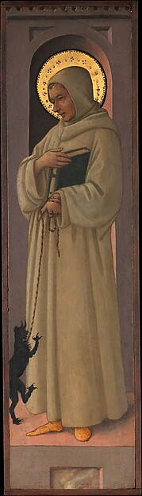
Der hl. Bernhard von Clairvaux im Gebet
Der hl. Bernhard von Clairvaux (1090–1153) schreibt an seine Mönche: Was ich immer auf den Lippen habe, was ich immer im Herzen habe, was ich ohne Unterlass schreibe, was meine Philosophie im Tiefsten ausmacht, ist Jesus, und zwar Jesus als der Gekreuzigte.
In seiner Auslegung zum Hohenlied beschreibt er die Ähnlichkeit des Öles mit dem Namen Jesu, die gleichermaßen auf drei Eigenschaften beruht: Öl unterhält das Feuer, nährt den Leib und lindert den Schmerz. Es ist also Licht, Speise und Arznei. Verfolge nun die gleichen Wirkungen am Namen des Bräutigams: Predigt man Ihn, so leuchtet Er, betrachtet man Ihn, so nährt Er, ruft man Ihn an, so salbt und lindert Er. Es spricht der Herr: Rufe Mich an am Tag der Trübsal und Ich werde dich erretten. (Ps 49,15) […] Hier, meine Seele, hast du im Namen Jesu wie in einem Fläschchen verwahrt dein Elixier. Es ist unbedingt heilkräftig und wird bei all deinen Krankheiten nie seine Wirkung verfehlen. O trage diese Medizin stets auf deiner Brust, habe sie immer zur Hand, damit all dein Sinnen und Handeln auf Jesus ziele.
Dein Name ist wie ausgegossenes Öl. Hld 1,2
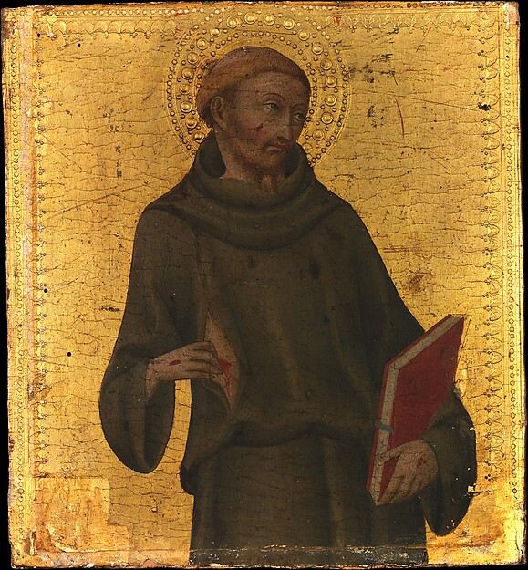
Der hl. Franziskus
Über die große Liebe des hl. Franziskus (1181–1226) zum Heiligsten Namen Jesu schreibt Thomas von Celano wie im Gebet versunken: Mehr als man es menschlich begreifen kann, war er innerlich bewegt, wenn er Deinen Namen nannte, heiliger Herr. Dann war er ganz des Jubels und der keuschesten Freude voll, und er erschien wahrhaftig als ein neuer Mensch und von einer anderen Welt. […]
Auch beschreibt Celano wie der hl. Franziskus die Menschwerdung und das Leiden Jesu fortwährend betrachtete: Vor allem war es die Demut der Menschwerdung Jesu und die durch sein Leiden bewiesene Liebe, die seine Gedanken derart beschäftigten, dass er kaum an etwas anderes denken wollte. […] Wenn er das Kind von Bethlehem oder Jesus nannte, dann leckte er gleichsam mit der Zunge seine Lippen, indem er mit seinem glückseligen Gaumen die Süßigkeit dieses Namens verkostete und schlürfte.
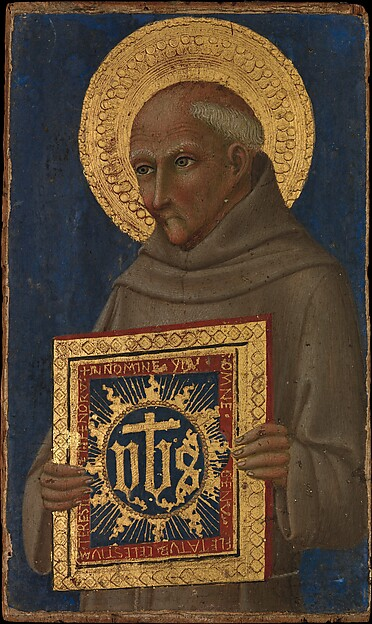
Der hl. Bernardin von Siena
200 Jahre später sollte ein geistiger Sohn des hl. Franziskus, der hl. Bernardin von Siena, (1380–1440) zum Bannerträger des Namens Jesus werden. Nie hielt er eine Volksmission ohne eine glühende Predigt über den Namen Jesus, dessen Verehrung er als das große Heilmittel gegen den Abfall vom Glauben erkannte. In seiner Lebensbeschreibung heißt es: Wie er schließlich sah, dass der ruhmreiche Name, der über allen Namen ist, (Phil 2,9) in den Herzen der Menschen beinahe in Vergessenheit geraten war, erfasste ihn das Verlangen, als echter Nachahmer des Apostels diesen Namen vor alle Könige und Stämme und Völker zu tragen. (Vgl. Apg 9,15)
Er suchte sich eine kleine Holztafel zu beschaffen, auf welcher dieser Name in goldenen Lettern gemalt oder gezeichnet wäre. Diese Tafel hielt er allen Volksscharen entgegen, die sich täglich zu seiner Predigt einfanden. Dabei verkündete er ihnen mit gehobener Stimme: Dies ist euer Abzeichen, dies ist die Waffe des Gottesvolkes! Dies ist der Name, vielgeliebte Gläubige, und es gibt keinen anderen, in dem ihr selig werden könnt. (Vgl. Apg 4,12) Dies ist ferner der heilbringende und liebreiche Name, dessen Bild ihr unaustilgbar an eurer Brust tragen und dort täglich betrachten, auf den Plätzen anbringen möget, und den jeder von euch sichtbar und in würdevoller Schönheit auf den Türsturz seines Hauses malen soll.
Dies ist der Name, den ihr nach der Lehre des Apostels in allen Tagen des Glücks vor Augen haben und in den Tagen des Unglücks anrufen müsst. Dieser heilige Name steht ja geschrieben erstens im Buche des Lebens, wie der Prophet bezeugt, dann auf der Inschrift des Kreuzes unserer Erlösung, wie wir aus dem Evangelium ersehen, (vgl. Joh 19,19) ferner steht Er geschrieben auf der Stirn jedes Heiligen in der ewigen Heimat.2 (Vgl. Offb 22,4)
Zum Triumph und zur Verherrlichung des siegreichen Namens Jesu, für die Rettung der Seelen und zur Sühne für die Beleidigungen des Heiligsten Namens Jesu legte der hl. Bernardin den Menschen drei ganz konkrete Verehrungsformen ans Herz:
- Das unablässige Herzensgebet durch die Anrufung des Heiligsten Namens Jesu
- Das Namen-Jesu-Monogramm als äußerlich sichtbares Zeichen
- Die eifrige Verbreitung der Andacht zum Heiligsten Namen Jesus
Singet dem Herrn und preist Seinen Namen, verkündet Sein Heil von Tag zu Tag. Ps 96,2
2 Das Leben des heiligen Bernardin von Siena, übersetzt von Lothar Schläpfer OFMCap, Hrsg. W, Nigg und W. Schamoni, Düsseldorf 1967.
Leben in der Sonne des Heiligsten Namens Jesu
Der Schlüssel zum geistlichen Leben ist das Jesusgebet. Hl. Geronta Porphyrius
Betrachten wir unsere Seele als eine Burg, die ganz aus einem Diamant oder sehr klarem Kristall hergestellt ist. Dort gibt es viele Gemächer, gleich wie im Himmel viele Wohnungen sind. (Vgl. Joh 14,2) Ich finde nichts, womit ich die erhabene Schönheit und Fähigkeit einer Seele vergleichen könnte. Nach meiner Erfahrung sind das Gebet und die Betrachtung das Tor, durch das man die Burg betreten kann. Hl. Theresia von Avila
Der Schlüssel des Davidsohnes
Der Name Jesus ist das kürzeste Herzensgebet und der Schlüssel, um in die geheimnisvolle Burg unserer Seele, die durch und auf Jesus hin erschaffen ist, einzutreten. (Vgl. Kol 1,12)
So spricht der Heilige, der Wahrhaftige, der den Schlüssel Davids hat, der öffnet, so dass niemand mehr schließen kann, der schließt, so dass niemand mehr öffnen kann […] Du hast nur geringe Kraft, und dennoch hast du an Meinem Wort festgehalten und Meinen Namen nicht verleugnet. […] Wer siegt, den werde Ich zu einer Säule im Tempel Meines Gottes machen, und er wird immer darin bleiben. Und Ich werde auf ihn den Namen Meines Gottes schreiben und den Namen der Stadt Meines Gottes, des neuen Jerusalem, […] und Ich werde auf ihn auch Meinen neuen Namen schreiben. Offb 3,7-12
Jesus, der uns als Erlöser den Himmel erschlossen hat, besitzt auch den Schlüssel zu unserer Seele. Allein durch Jesus können wir wirklich erkennen, wie Gott uns gedacht hat und welche Berufung Er uns für Zeit und Ewigkeit ins Herz gelegt hat. Der Name Jesu ist quasi das Kennwort für unsere eigene Seele, aber auch der Schlüssel zum richtigen Erkennen und Verstehen unseres Nächsten. In diesem Sinne erklärt uns ein Mönch der Ostkirche: Allen Männern und Frauen sollten wir uns auf der Straße, im Geschäft, im Büro, in der Fabrik, im Bus, wo wir Schlange stehen, besonders aber denen, die uns unsympathisch sind, mit dem Namen Jesu im Herzen und auf den Lippen nähern. Über sie alle sollten wir Seinen Namen aussprechen, denn ihr wirklicher Name ist der Name Jesus. In ihnen verehre Christus, in ihnen diene Christus. In vielen dieser Männer und Frauen ist Jesus eingesperrt. Befreie Ihn, indem du Ihn in ihnen erkennst und verehrst. Wenn wir mit dieser neuen Sicht durch die Welt gehen, über jeden Menschen Jesus aussprechen, dann werden sie vor uns verwandelt und verklärt. Je mehr wir uns den Menschen dienend hingeben, desto mehr wird die neue Sicht in uns klar und lebendig sein.3
Und sollten wir die schmerzliche Erfahrung machen, von unseren Mitmenschen verletzt oder gekränkt zu werden, so hilft uns das Wort des Russischen Pilgers: Wenn mich jemand beleidigt, so denke ich nur daran, wie süß das Jesusgebet ist; sogleich ist die Kränkung und aller Zorn geschwunden, und ich habe alles vergessen.4
3 Im Namen Jesu ist Heil von einem Mönch der Ostkirche, übersetzt von Dr. Oswald Loretz, Innsbruck 1959, S. 58–59, Imprimatur der Apostolischen Administratur Innsbruck Nr. 2557/2 vom 31.12.1958.
4 Das Jesusgebet hilft uns, Christus in allen Menschen zu erkennen und alle Menschen in Christus zu sehen. Deshalb hat das Jesusgebet mit Weltflucht oder Weltverneinung nichts zu tun. Im Gegenteil, es ist eine Form äußerster Lebensbejahung. Das Jesusgebet enthält keine Ablehnung gegenüber Gottes Schöpfung; es zeigt vielmehr eine höchste Wertschätzung für alle Menschen und Dinge in Gott. Der Name Jesu kann ein mystischer Schlüssel zu dieser Welt werden, ein Instrument der verborgenen Darbringung aller Dinge und Menschen; denn Er drückt der Welt das göttliche Siegel auf. (Kallistos Ware, Hinführung zum Herzensgebet, Freiburg 1982, S. 72–73, Imprimatur: Freiburg i. Br. 13.09.1982)
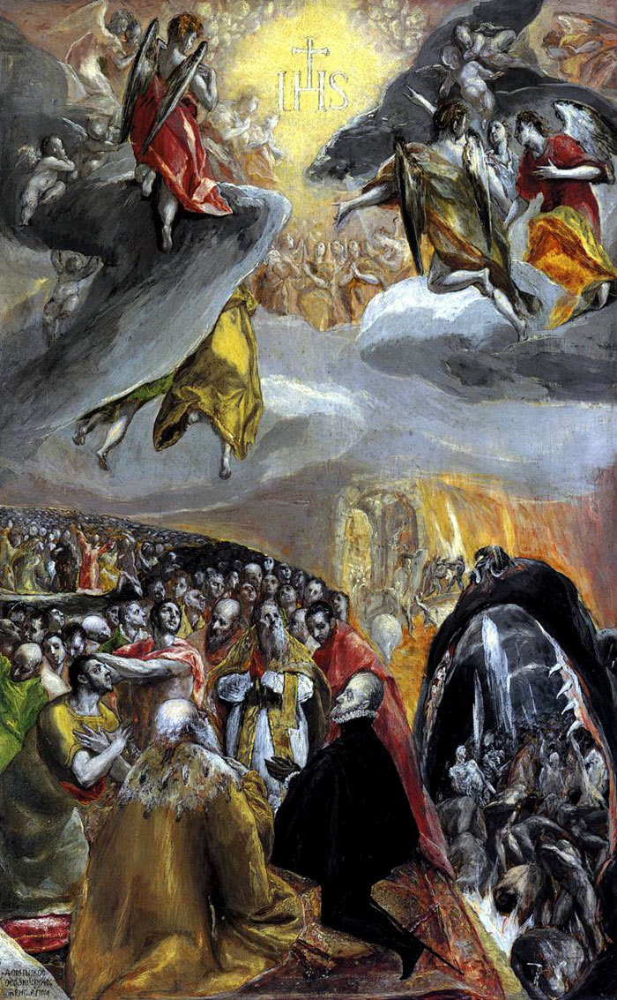
Die Anbetung des Namens Jesu (El Greco)
Die Anrufung des Heiligsten Namens Jesu
Bischof Johann Michael Sailer schreibt über die Anrufung des Heiligsten Namens Jesu: Jeder, der den Namen des Herrn anruft, der wird selig werden. (Röm 10,13) Dies ist die Verheißung aller Verheißungen, weil sie keinen ausschließt, der den Namen des Herrn anruft, und jedem das höchste Gut verheißt. […] Diese Verheißung lässt uns nicht etwa eine geringe Gabe, sondern das höchste Gut erwarten: Wer den Namen des Herrn anruft, der wird selig. Seligkeit, das höchste Gut des Menschen, kommt von dem Herrn, der reich ist für alle.
Wenn der eine Herr, der reich ist für alle, geben soll, so müssen die Bedürftigen wohl annehmen, was ihnen dargereicht wird. Wer nun seine Sünden, sein Elend, seine Armut nicht erkennt oder dem Namen des Herrn nicht die Ehre geben und zulassen will, durch Ihn reich zu werden, der ruft den Herrn nicht als seinen Herrn an; er verschmäht also die Gabe Seiner Hände, bleibt arm und elend, bleibt ein Sünder und behält den Fluch der Sünde, bleibt ohne Liebe und ohne Seligkeit. Dagegen wer seine Sünde und seine Armut an Liebe und Seligkeit erkennt, wer in Christus seinen Herrn, der reich ist für alle, erkennt, der spricht wohl auch zu Ihm: Der Du reich bist für alle, sei es auch für mich! Lehre mich lieben, wie Du geliebt hast. Sei auch mein Heil und mache mich in Liebe selig! Er spricht's und empfängt eine Gabe nach der andern, kann seinen Herrn lieben und liebend in Ihm selig sein.
Wenn wir den Namen Jesus ehrfürchtig und liebevoll aussprechen, verbinden wir uns mit unserem Retter und Heiland, der durch die Anrufung Seines Heiligsten Namens sogleich selbst gegenwärtig wird und unsere Seele mit Seiner Gnade berührt und beschenkt.5 Denn wenn wir Seinen Namen anrufen, rufen wir auch gleichzeitig Seine Erlöserverdienste auf uns herab, die durch diesen Akt der Hinwendung zu unserem Herrn und Gott wieder neu wirkmächtig werden.
Wenn uns das einmal so richtig bewusst wird, dann durchstrahlt diese beglückende Wahrheit unser ganzes Herz und der königliche Weg der Anrufung des Heiligsten Namens Jesu wird zum Pulsschlag unseres Lebens.
5 Die Macht und die Herrlichkeit Gottes sind in Seinem Namen gegenwärtig und wirksam. Der Gottesname ist die anwesende Gottheit: „Immanuel – Gott mit uns". In dem Augenblick, da man aufmerksam und überlegt den Namen Gottes anruft, begibt man sich selbst in Seine Gegenwart, öffnet sich für Seine Kraft und überliefert sich selbst als Werkzeug und Opfergabe in Seine Hände. Ein solcher Kontakt verschafft uns ein größeres Maß an übernatürlichem Leben und an Nächstenliebe. Deshalb trägt die Anrufung des Heiligsten Namens Jesu einen ganz eigenen sakramentalen Charakter. (Ebd., S. 134)
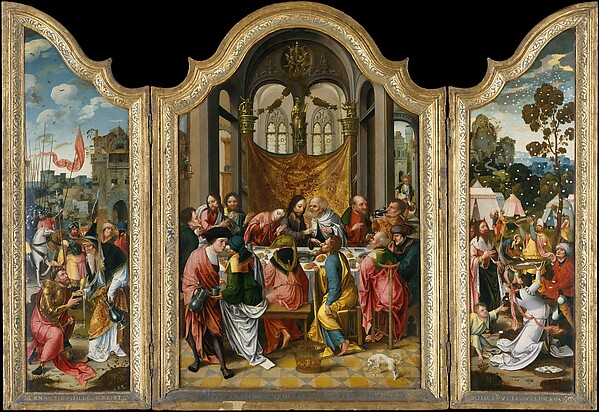
Das Letzte Abendmahl
Unsere Seele ist ein Abendmahlsaal, in dem das Letzte Abendmahl zu jeder Zeit gefeiert werden kann. Im Geheimen sagt Er uns wie ehemals: Gar innig hat Mich danach verlangt, dieses Osterlamm mit euch zu essen. (Lk 22,15)
In der sichtbaren Eucharistie wird Jesus unter den Gestalten von Brot und Wein dargebracht. In der Eucharistie in unserem Inneren kann Er durch Seinen Heiligsten Namen allein bezeichnet und genannt werden. Deshalb können wir die Anrufung des Heiligsten Namens zu einer geistlichen Kommunion machen.6
Deinen Namen anzurufen und an Dich zu denken, ist unser Verlangen. Jes 26,8
6 Ebd. S.67.
Das Licht des Namens Jesu strahlt durch das Herz und erleuchtet so das ganze Universum. Vater Sergij Bulgakow
Die Wiederholung des Namens Jesu ist mit dem Flügelschlag des Vogels, der sich in die Lüfte erhebt, vergleichbar. Sie darf nie anstrengend und gezwungen, hastig oder geräuschvoll sein. Sie muss fein, leicht und – in des Wortes tiefster Bedeutung – gnadenhaft anmutig sein. Wenn der Vogel die erstrebte Höhe erreicht hat, gleitet er in seinem Flug dahin und nur von Zeit zu Zeit schlägt er mit seinen Flügeln, um sich in der Luft zu halten. So kann auch die Seele, die den Gedanken an Jesus in sich aufgenommen hat und erfüllt ist mit dem „An-Ihn-denken", die Wiederholung des Namens lassen und in unserem Herrn ruhen. Wenn andere Gedanken den Gedanken an Jesus zu verdrängen drohen, dann beginne die Anrufung von neuem, um frischen Aufschwung zu gewinnen.7
Liebet das Gebet, das Gespräch mit dem Herrn. Alles liegt daran, zu lieben, in den Herrn, in Christus, den Bräutigam verliebt zu sein. Hl. Geronta Porphyrius
7 Im Namen Jesu ist Heil, S. 26.
Wer an Mich glaubt, aus dessem Inneren werden, wie die Schrift sagt, Ströme lebendigen Wassers fließen. Joh 7,37
Das Jesusgebet ist wie ein unsichtbarer geistlicher Strom, der unaufhörlich die Kraft Gottes – Seine heilige Gnade – von der immer fließenden Quelle Jesus Christus, in unsere Seele gießt und niemals kraftlos wird, sondern in dem Maße, wie unser geistliches Volumen sich erweitert, seine Gnadenströme noch vermehrt. Schimonach Ilarion
Vom Aufgang der Sonne bis zum Untergang sei der Name des Herrn gelobt! Ps 113,3
Frieden und Versöhnung im Heiligsten Namen Jesu
Auf welche Weise gelangen wir durch den Namen Jesus zu Friede und Versöhnung? Lassen wir nochmals unseren Mönch der Ostkirche zu Wort kommen:
Der Name selbst ist ein Mittel der Reinigung und Vervollkommnung. Ein Prüfstein und ein Filter, durch den unsere Gedanken, Worte und Taten hindurch müssen, um von ihren Unreinheiten befreit zu werden. […] Wenn wir versucht werden, bringt uns der Name Jesu Sieg und Frieden. Ein Herz, das bereits mit dem Namen Jesu und der Gegenwart unseres Herrn erfüllt ist, verweilt in keinem sündhaften Gedanken oder Bild. Wir sind aber schwach, und oft bricht unsere Verteidigung zusammen und dann ist in uns die Versuchung wie reißendes Wasser. In einem solchen Falle schaue nicht auf die Versuchung, schlage dich nicht mit deinem eigenen Verlangen herum, schaue nicht auf den Sturm und blicke nicht auf dich. Schaue auf unseren Herrn, halte dich an Ihn, rufe Seinen Heiligsten Namen an. Als Petrus über das Wasser Jesus entgegenging und den Sturm sah, geriet er in Angst (Mt 14,30) und begann zu sinken. Wenn wir, anstatt auf die Wellen und den Wind zu schauen, entschlossen über das Wasser Jesus entgegengehen, wird Er Seine Hand nach uns ausstrecken und uns ergreifen. Denn wer den Namen des Herrn anruft, wird gerettet. (Joel 3,5)
Der Name Jesu bringt Vergebung und Versöhnung. Wenn wir schwer gesündigt haben (umso mehr, wenn wir leicht gesündigt haben), können wir uns in einem Augenblick in Reue und Liebe an den Heiligsten Namen wenden und Ihn aus ganzem Herzen aussprechen und der so gebrauchte Name (durch den wir die Person Christi erreichen) wird bereits ein Zeichen der Vergebung sein. Nach der Sünde wollen wir nicht untätig warten, verschieben und zaudern. Lasst uns nicht zögern, erneut die Anrufung des Namens aufzunehmen, obwohl wir unwürdig sind.8
Durch die Anrufung des Heiligsten Namens Jesu beginnt in unserer Seele ein ganz spezieller Läuterungsvorgang, der alles Unreine und Unheilige zum Vorschein bringt, damit unser Herz geheilt werden kann. Der hl. Johannes Chrysostomus schreibt: Das Gedenken Gottes erschließt der Seele, was in ihr ist. Erst wird ihr das Schlechte in ihrem Herzen bewusst, später auch das Gute. Zuerst bringt das Gottgedenken alle Teufelsmacht in Bewegung, dann zähmt es sie allmählich. So vermag das Gebet, die in uns wohnende Sünde aufzudecken und sie dann auch zu tilgen.
8 Im Namen Jesu ist Heil, S. 34, 42-44.
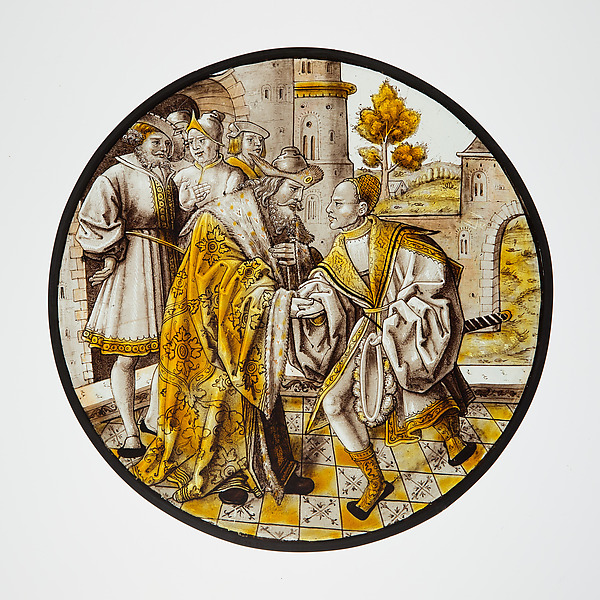
Christus und der verlorene Sohn
Der Name Jesu Christi dringt in die Herzenstiefen, bändigt den dort herrschenden Widersacher, befreit und belebt die Seele. Auf diesem Weg der Läuterung ist das Sakrament der Versöhnung für unser geistliches Wachstum von äußerster Wichtigkeit.9
Wenn wir uns am Abend in der Gewissenserforschung wie der verlorene Sohn vor die Füße des Himmlischen Vaters hinknien und sagen: Ich bin nicht wert, Dein Kind zu heißen (Lk 15,19) und uns freiwillig dem Gericht Gottes stellen, um Gott die Ehre zu geben, die Ihm gebührt, dann wird unser Engel an unsere Seite treten. Er zeigt uns die Fülle der Barmherzigkeit Gottes, die Fülle der Gaben und Gnaden, die uns zuteil wurden und wir fragen uns:
Wie haben wir das Pfund, das uns anvertraut wurde – sei es die Gabe zu erziehen, zu führen, zu raten, zu helfen, zu heilen oder zu lieben – genützt? Besteht nicht unser Leben aus lauter „Fahrlässigkeiten", aus lauter „Tunwollen" und „Nicht-getan-haben"? Da fallen wohl die Reuetränen aus unseren Augen, und wir beten:
9 Empfange das Sakrament der Buße stets mit Eifer, Vertrauen, Hochachtung und innerem Schmerz über deine Sünden. Dieses Gnadenmittel bereitet dem Teufel einen großen Schrecken, und er gibt sich viele Mühe, die Seelen davon abzuhalten oder sie dahin zu bringen, es lau, gewohnheitsmäßig, ohne Reue und die anderen erforderlichen Bedingungen zu empfangen. (Maria von Agreda, Leben der Jungfrau und Gottesmutter Maria Bd.4, S. 212, Jestetten 1982, Imprimatur: Erzb. Ordinariat Salzburg, 31. Mai 1954, Zl. 1311)
Herr, geh weg von mir, ich bin ein sündiger Mensch! Lk 5,8
Aber Gott macht das Maß Seiner Taten, Seiner Liebe zu uns auch immer voll. Er neigt Sich zu uns und nimmt unser Maß. Da liegen auf unseren kleinen Scherben die Blutstropfen unseres Herrn, die Schweißtropfen der Todesangst unseres Herrn, womit Er all unsere Schuld und unser Unvermögen zugedeckt hat. Und da liegt das Unbefleckte Herz unserer Mutter, deren Kinder wir sind. Und das Mutterherz ist so groß und weit, dass es das Maß füllt bis zum Rand, und obendrauf legt unser Engel noch sein Sanctus, das er mit uns und für uns ununterbrochen betet, bis das Maß gerüttelt voll ist.
Und Gott tut das Unbegreifliche. Er nimmt es an, als sei es von uns und schließt uns voll Liebe in Seine Arme, wie den verlorenen Sohn.
(Nach einer frühchristlichen Heiligen)
Wenn eure Seele mit Ehrfurcht und Sehnsucht diese sieben Worte wiederholt: „Herr Jesus Christus, hab Erbarmen mit mir", wird sie nie gesättigt sein! Sagt sie euer Leben lang! Sie bergen so viel Saft! Hl. Geronta Porphyrius
Tut alles im Namen des Herrn Jesus
In seiner Schule des Herzensgebetes rät uns Theophan der Einsiedler: Arbeite und sprich dabei das Jesusgebet, auf dass Gott dich segne.10 Die Hauptsache ist, vor Gott zu wandeln oder unter dem Blick Gottes zu leben, im Bewusstsein, dass Gott uns sieht, dass Er unsere Seele und unser Herz sucht. Dieses Bewusstsein ist der stärkste Hebel im ganzen Mechanismus des geistlichen Lebens. Denn das Jesusgebet ist eine Lampe für unsere Schritte und ein Leitstern auf unserem Weg zum Himmel.11
Alles tun im Namen des Herrn, bedeutet, ganz ausgerichtet sein auf Seine Verherrlichung, bemüht sein, alles zu Seinem Gefallen zu tun, weil es Sein Wille ist. Das will besagen: alles Tun in Gebet einhüllen, es mit Gebet beginnen und mit Gebet beenden. Wenn wir anfangen, um den Segen Gottes bitten, im Lauf der Arbeit Seine Hilfe anrufen, und am Ende Ihm Dank sagen, dass Er geruht hat, Sein Werk in uns und durch uns zu erfüllen.12
Denk Du in mir, o Jesus, dann denk ich licht und klar. Sprich Du aus mir, o Jesus, dann sprech ich mild und wahr. Wirk Du durch mich, o Jesus, gerecht ist dann mein Tun, geheiligt meine Arbeit, geheiligt auch mein Ruhn. Durchdring mein ganzes Wesen, erfüll mein ganzes Sein, dass man aus mir kann lesen die große Liebe Dein.
10 Der Name Jesus kann allein gebraucht oder mit einem mehr oder weniger kurzen Satz verbunden werden. Bei den Christen des Ostens ist die weitverbreitetste Form: „Herr Jesus Christus, erbarme Dich meiner!" Einfacher noch: „Jesus Christus" oder „Herr Jesus". Die kürzeste Form der Anrufung ist allein der Name „Jesus".
11 Gebet ist Tat; wer betet, ist im höchsten Maße aktiv. Von keinem Gebet gilt das mehr als vom Jesusgebet. Die richtig praktizierte Anrufung des Namens führt jeden tiefer an seine Arbeit heran; jeder wird tüchtiger in seinem Handeln und dabei nicht isoliert von den anderen, sondern mit ihnen verbunden. Er wird feinfühliger für ihre Ängste und Sorgen, so wie niemals zuvor. Das Jesusgebet macht jeden zu einem „Menschen für andere". (Hinführung zum Herzensgebet, S. 72)
12 Schule des Herzensgebetes, Die Weisheit des Starez Theophan, Salzburg 1985.
Was ihr auch tut in Wort oder Werk, tut alles im Namen des Herrn Jesus, und sagt Gott dem Vater durch Ihn Dank. Kol 3,17
Lebenszeit ist Gnadenzeit
Das Heil, das Gott uns schon in diesem Leben schenken will, ist stets an die rechte Stunde gebunden, die niemals wiederkehrt. Denn so spricht der Herr: Zur Zeit der Gnade erhörte Ich dich. Ich half dir am Tage des Heils. (Jes 49,8)
Unsere Jahre sind wie kristallene Schalen, die Gott uns borgt. Wir aber müssen sie füllen und sie gefüllt wieder zurückgeben in die Hände Gottes, der sie uns aufbewahrt in Ewigkeit.
- Schenken wir Gott zu Beginn des Tages den ersten Augenblick und geben wir unserem Tagewerk die Richtung auf den, der Herr aller Zeit und Vater der Ewigkeit ist: Alles meinem Gott zu Ehren!
- Glücklich alle, die sich täglich durch das Kreuzzeichen und die Übung des Herzensgebetes in den Schutz und die Geborgenheit der Liebe Gottes stellen.
- Glücklich die Eltern, die sich die Zeit nehmen ihren Kindern das Beispiel des Betens zu geben, um sie die Zwiesprache mit Gott zu lehren. Sie werden Freude an ihnen haben.
- Glücklich die jungen Menschen, die durch den Kontakt mit Jesus Ihn in ihren Herzen halten und an der Mutterhand Mariens strahlend für Ihn durchs Leben gehen. Ihr Gebet lautet: Mach mich Dir ähnlicher! Lass Dein Leuchten auf mir ruhen und mich zur Strahlkraft im Guten für meine Umwelt werden.
Noch eines möchte ich meinen lieben Kindern ans Herz legen: dass sie doch ja dem Heiland ihr Herz immer offen halten wollen, es nie durch Scheu vor Ihm sich entfernen lassen. Wir sündigen alle, denn wir sind Menschen; aber, wenn wir uns nicht mit Vertrauen zu Christus wenden, zu wem sollen wir denn gehen, und wem sollen wir vertrauen?
Aus Friedrich Leopold Stolbergs (1750–1819) letzten Ermahnungen an seine Kinder
Bitten und Danken im Namen Jesu
Im Johannesevangelium verspricht uns Jesus an mehreren Stellen, dass Er unsere Bitten erhören werde, wenn wir uns auf Seinen Namen berufen. Alles, um was ihr in Meinem Namen bittet, werde Ich tun. (Joh 14,13)
Wie oft aber haben wir schon gebittet und sind nach unserem menschlichen Ermessen scheinbar nicht erhört worden? Doch wenn wir ehrlich sind, müssen wir uns fragen, haben wir wirklich im Namen Jesu gebittet? Das heißt, haben wir mit Jesus unseren Willen in den Willen des Vaters gelegt? Die Jünger auf jeden Fall, mussten das Wort Jesu hören: Bis jetzt habt ihr noch nicht in Meinem Namen gebetet. (Joh 16,23) Und wir kennen ein wenig die Bitten der Apostel, die auf irdische Reiche bedacht waren und dem Leiden aus dem Weg gehen wollten. Wenn unser Bitten dahin geht, dass wir nichts anderes wollen als dass Gottes Wille und Seine Verheißungen sich ganz und gar an uns erfüllen, so findet das kleinste Gebet und die leiseste Bitte Erhörung. Denn wir haben Ihm gegenüber die Zuversicht, dass Er uns erhört, wenn wir etwas erbitten, das Seinem Willen entspricht. (1 Joh 5,14) Gott sehnt sich zutiefst danach, uns mit Seinen Gaben zu überschütten. Und welche Gabe könnte größer sein, als Sein göttlicher und heiligster Wille. Werden wir deshalb niemals müde Gott zu loben, Ihn um Seine Hilfe und Gnade zu bitten und Ihm von ganzem Herzen zu danken. Denn jeder Dank ist wie eine neue Bitte, durch die wir noch weitere Gnaden empfangen. In diesem Sinne legt uns der Apostel Paulus ans Herz: Bringt in jeder Lage betend und flehend eure Bitten mit Dank vor Gott. (Phil 4,6)
Abba, lieber Vater, erhöre mich um des Namens Jesu, Deines vielgeliebten Sohnes willen!
In der Sekunde, da der menschliche Geist sich in Bewegung setzt, um zu beten, sucht ihn die göttliche Gnade heim. Hl. Geronta Porphyrius
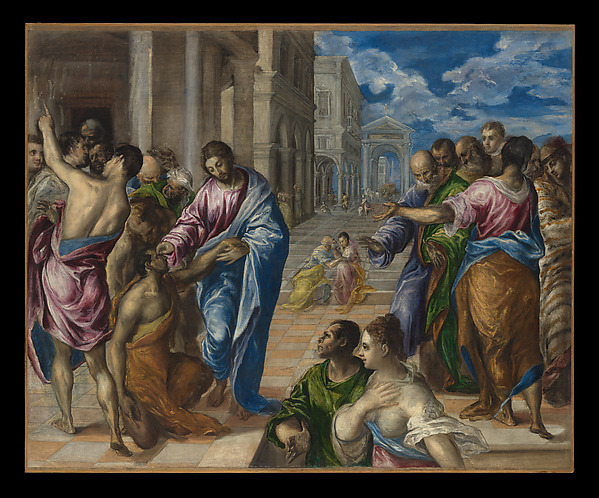
Christus heilt einen Blinden
Heilung und Befreiung im Namen Jesu
Um uns im Glauben zu stärken und uns vor dem Bösen zu schützen, hat der weltbekannte Exorzist P. Gabriel Amorth viele seiner Erfahrungen schriftlich festgehalten: Es gibt heute eine große Zahl von Priestern und sogar Bischöfe, weiß P. Amorth zu berichten, die nicht mehr an Teufel und den Exorzismus glauben. Wenn man ihnen sagt, dass Jesus zahlreiche Besessene geheilt hat, erwidern sie, der Begriff „besessen" sei ein aus der Sprache und Kultur der damaligen Zeit abgeleiteter Ausdruck, der jene als von Dämon Besessene bezeichnete, die in Wahrheit bloß Kranke waren. Doch das Evangelium unterscheidet ganz deutlich die beiden Zustände: Jesus heilt Kranke und befreit Geplagte von Dämonen.
Dementsprechend verleiht der auferstandene Herr zwei unterschiedliche Vollmachten: Durch die, die zum Glauben gekommen sind, werden folgende Zeichen geschehen: In Meinem Namen werden sie Dämonen austreiben […] und die Kranken, denen sie die Hände auflegen, werden gesund werden. (Mk 16,17)
Nicht nur vom Bischof beauftragte Exorzisten können geplagte Seelen von dämonischem Einfluss befreien, sondern auch all jene, die mit ganzer Hingabe an den Namen Jesus glauben, wie es der Herr im Evangelium sagt. Von vielen Heiligen wissen wir, dass ihre Christusverbundenheit das Böse verscheuchte. Denken wir nur an den hl. Benedikt oder an die hl. Caterina von Siena; denn es ist immer Jesus selbst, der den Satan vertreibt. Tausendmale wiederhole P. Amorth: Mit Furcht und Zittern rufe ich flehentlich Deinen heiligen Namen an, auf dass Du mir einen festen Glauben und die Macht verleihst, mit Sicherheit und getreu Deinem Gebot diesen Dämon anzugreifen und in der Kraft Deines Armes zu vertreiben. Darum bitte ich in Deinem Namen, Jesus Christus, Du unser Herr und Gott …
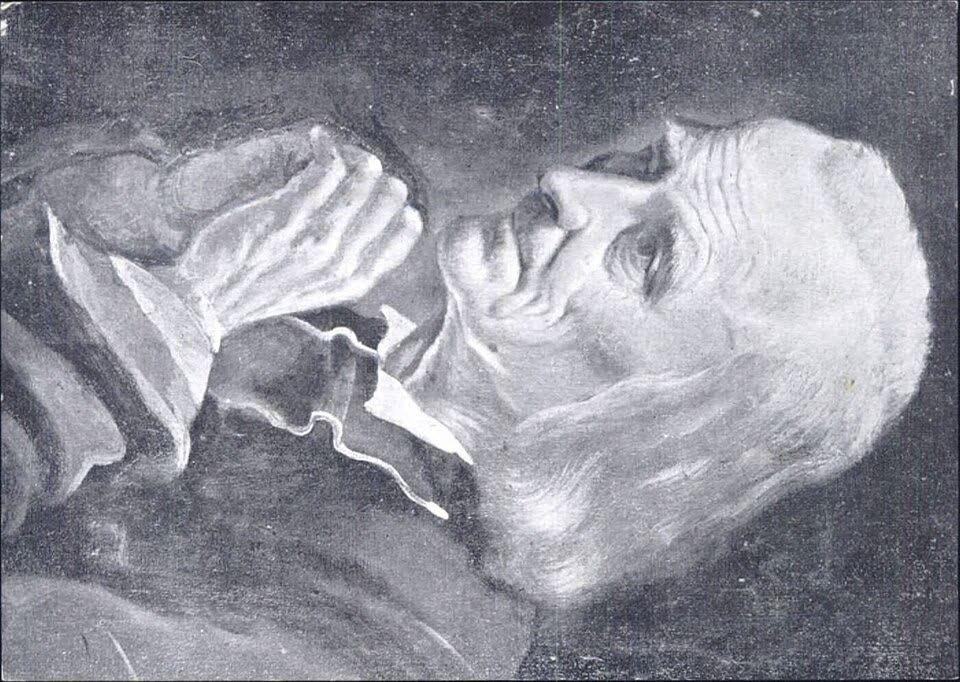
Der hl. Pfarrer von Ars (hl. Johannes Maria Vianney)
Weiter erklärt P. Amorth: Die Macht des Feindes ist immer die gleiche geblieben, denn der Teufel hat immer dieselbe Macht. Was aber enorm zugenommen hat, ist die Zahl der Türen, die sich seinem Eindringen geöffnet haben: Magie, Okkultismus, Spiritismus, auch ein Leben in schwerer Sünde. Oder denken Sie an all die Personen, die sich Satan weihen.
Dabei unterscheidet er zwei Kategorien von Opfern der Dämonen: einerseits solche, die ohne eigene Schuld aufgrund ihrer Gottesliebe bösartige Störungen bis hin zur Sühnebesessenheit tragen, wie etwa der hl. Pfarrer von Ars oder die hl. Mirjam von Abellin, aber auch Menschen, die durch Verwünschungen zu schuldlosen Opfern werden; andererseits jene, die sich aufgrund ihrer eigenen Verfehlungen der Macht der Dämonen ausliefern, sei es durch das Verharren in schwerer Sünde, wie z. B. Judas, sei es durch okkulte Praktiken. Deshalb, so lehrt P. Amorth, sind die wichtigsten Mittel im Kampf gegen den Teufel: die Hl. Beichte, Hl. Messe, Hl. Kommunion, Eucharistische Anbetung, Psalmen und das Rosenkranzgebet. Erst wenn diese Mittel ausgeschöpft sind, bediente er sich als Exorzist der offiziellen Gebete, die zum Ziel haben, Satan im Namen Christi zu vertreiben. Ich habe, grob berechnet, mehr als siebzigtausend Exorzismen durchgeführt, und ich wurde immer von großem Mitleid ergriffen, denn ich begegnete Fällen von unermesslichem Leid. Obwohl der Exorzismus ein sehr anspruchsvoller priesterlicher Dienst ist, ist es auch eine dankbare Aufgabe, denn der Priester erlebt, wie im Namen Jesu Menschen befreit werden, die von keinem Arzt geheilt werden konnten. Hier können wir an die Worte der Hl. Schrift denken: Es ging eine Kraft von Ihm aus, die alle heilte. (Lk 6,19)13
Wenn ihr eine große Liebe habt, und wenn diese Liebe euch zum Gebet drängt, dann werden die Fluten eurer Liebe sich über den ergießen, für den ihr betet, und sie werden in ihm wirken und um ihn herum ein Schutzschild sein. Ihr beeinflusst ihn so und führt ihn zum Guten. Wenn Gott eure Mühe sieht, dann gewährt Er euch Seine Gnade in Überfülle, sowie jenem, für den ihr betet. Hl. Geronta Porphyrius
Heilungs- und Schutzgebet
Herr Jesus Christus, wir danken Dir für Deine Liebe zu uns. Berge uns alle in Deinen Wunden und schenke uns Dein Heil. Herr, wir bitten Dich, bezeichne uns mit Deinem und Mariens Siegel, dass wir vor allen Angriffen des Bösen und allem Unheil bewahrt bleiben mögen. Von Verfluchungen, Verwünschungen, Besessenheit, Schwermut, Depressionen und Angst – Befreie uns, o Herr!
Du sagst uns ja immer wieder: Fürchte dich nicht, Ich bin bei dir. Daher brauchen wir keine Angst zu haben.
Wir bitten Dich, o Herr, gewähre uns auf die Fürsprache der Allerseligsten Jungfrau Maria die Befreiung von jeder Verfluchung und Verwünschung und erfreue uns alle Zeit mit Deinem Frieden. Herr Jesus Christus, Du bist voller Liebe zu uns Menschen und Du hast alle Macht im Himmel und auf der Erde. Berühre uns mit Deiner heilenden Liebe. Mache alles heil, was in unserem Herzen, in unserer Seele verletzt und verwundet ist. Heile alle Erinnerungen unseres Lebens, die uns wehtun. Heile alle Wunden, die andere Menschen uns zugefügt haben. Heile alles, was verletzt und verwundet ist. Lege Deine durchbohrten, heilenden Hände auf alle unsere Wunden der Seele und des Körpers, solange bis sie ganz geheilt sind. Herr Jesus Christus, Du weißt auch um alle körperlichen Krankheiten. Berühre Du sie mit Deiner heilenden Kraft, mit Deiner heilenden Wärme und mache alle unsere Organe, die erkrankt sind, heil. Du bist ja der Heiland der ganzen Welt!
Vater im Himmel, im Namen Jesu, Deines Sohnes, bitten wir Dich, schenke uns in reichem Maße Deine väterliche Liebe, und lass uns diese Liebe jetzt auch im Herzen spüren. Amen.14
13 Vgl. Triumph des Herzens 26. Jg. (I) 2019/ Nr.152.
14 Dieses frei formulierte Gebet von Pfr. Klaus Müller (1946–2001) wurde nachträglich aufgezeichnet. Sein Leben war das eines heiligmäßigen Priesters. Auf sein Gebet und seine Fürsprache sind viele Wunder geschehen. Er hatte viele Charismen, die er in reichem Maße den Hilfesuchenden zuteil werden ließ. Zum Schutz vor allem Bösen und für eine in Gott geborgene Zukunft bezeichnete er seit 1994 alle Menschen, die ihn darum baten, mit dem Siegel Gottes auf die Stirn.
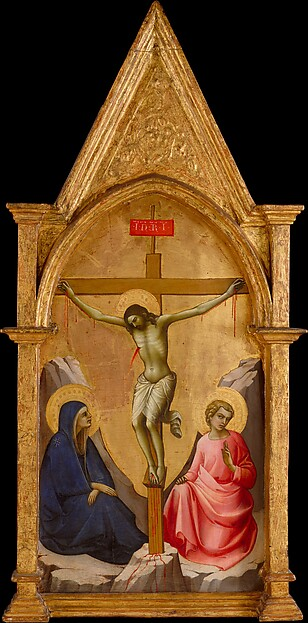
Kreuzigung Christi mit Maria und Johannes
Der verborgene Schatz
Wenn wir alle heroischen Akte der Auserwählten, alle Leiden der Märtyrer, die Tugenden und Verdienste aller Heiligen, die je gelebt haben und bis ans Ende der Zeiten leben werden, ja wenn wir selbst die Tugenden und Verdienste der Allerseligsten Jungfrau unser Eigen nennen könnten, so wäre doch das alles nur wie ein Sandkörnchen im Vergleich mit einer einzigen Aufopferung Jesu!
Glücklich, tausendmal glücklich die Seele, die Jesus gefunden und die sich Seiner zu bedienen weiß! Mit Jesus hat sie alles. Er genügt ihr.
Das will aber sicherlich nicht heißen, die Verehrung der Heiligen sei unnütz; denn, wenn Christus deren Verdienste krönt, krönt Er nur Seine eigenen Gaben. Und wenn wir dieselben Gott aufopfern, opfern wir Ihm nur die Verdienste Seines eigenen Sohnes auf.
Freuen wir uns also, Gott dem Vater, das aufzuopfern, was „von Jesus in den Heiligen ist"; denn das ist es, was dem Vater an ihnen so wohlgefällig und was ihre ewige Verherrlichung bilden wird. Die seligste Jungfrau Maria nimmt eine besondere Stellung in der Hierarchie der Heiligen ein, weil sie mehr als alle anderen unzertrennlich mit Jesus vereint war. Wenn wir sagen: Maria! So sagt sie: Jesus! Wenn wir zu Maria gehen, so führt sie uns zu Jesus. Maria schaute immerfort auf Jesus, vereinigte sich mit Jesus, opferte sich Jesus auf. Jesus war ihr alles, der ganze Inhalt ihres Lebens. Maria wird auch uns lehren, aus Jesus unser „Alles" zu machen; wenn wir sie darum bitten.
Aber was heißt denn das, Jesus aufopfern, sich Seiner bedienen? Wie kommt es denn, dass selbst in vielen Andachtsbüchern dieser Gedanke kaum gestreift wird?
Jesus aufopfern! Das heißt, Ihn Seinem Vater zur Sühne darbieten mit den Worten: Siehe, ich bin nichts als Schwachheit und Elend; aber ich opfere Dir die Kraft, die Heiligkeit, die Reinheit, die Tugenden Jesu auf. Ich bin kalt, aber wenn ich alle Liebe der Seraphim hätte, was könnte ich Dir geben, was Deiner würdig wäre? Himmlischer Vater, zum Ersatz für meine Kälte opfere ich Dir die Liebe Jesu auf. Ich bin soeben gefallen, ich habe gefehlt: Ich opfere Dir das Leiden und das Blut Jesu auf zu meiner Reinigung und zur Sühne. Diese und jene schlechten Regungen drängen sich mir gegen meinen Willen auf, ich opfere Dir dafür die entgegengesetzten Akte Jesu auf.
Auf diese Weise werden selbst unsere Schwachheiten dazu dienen, uns zu bereichern, da sie uns Gelegenheit bieten, diese unendliche Aufopferung zu machen, an die wir vielleicht nicht gedacht hätten, wenn uns nicht Übles begegnet wäre.
Jesus aufopfern heißt ebenfalls, Ihn als Heiligmacher des Guten aufopfern. Durch diese Aufopferung erhalten die, welche ihre geringsten Handlungen mit Jesu Tun und Lassen nicht nur vereinigen, sondern gleichsam verschmelzen, ihre kleinen Münzen in Goldstücke verwandelt zurück.
Ist z. B. ein Akt des Gehorsams von uns verlangt, bedienen wir uns unserer Gehorsamsakte als einer Gelegenheit, um dem Ewigen Vater die einzelnen Gehorsamsakte Jesu aufzuopfern, und lenken wir unsere ganze Aufmerksamkeit darauf, mit aller nur möglichen Vollkommenheit und Treue sie auszuführen, um Ihn dadurch wieder an Sein göttliches Wohlgefallen zu erinnern. Bietet sich uns eine Gelegenheit zur Verdemütigung, so sprechen wir: Himmlischer Vater, ich opfere Dir die Demütigungen Jesu auf. Im Leiden schauen wir nicht auf uns, sondern opfern wir die Leiden Jesu auf.
Wie reich würden wir werden, wenn wir es verstünden, uns so in allem mit Jesus zu vereinen und Ihn dem Himmlischen Vater aufzuopfern! Machen wir vor allem die Aufopferung Jesu bei der Heiligen Kommunion. Er gibt sich uns ja nur, um uns zu bereichern und uns zu ermöglichen, Ihn Seinem Vater wiederzugeben und aufzuopfern und durch diese Aufopferung uns zwei unendliche Güter zu verschaffen: Gott eine Gabe darbringen zu können, die Seiner würdig ist, und dadurch einen Blick Seiner Liebe und Seines göttlichen Wohlgefallens auf uns herabzuziehen.
Vor der Heiligen Kommunion opfern wir dem Ewigen Vater das Leiden Jesu auf zur Reinigung unserer Seele und zur Sühne für all unsere Treulosigkeiten. Und nach der Heiligen Kommunion wollen wir Jesus wieder aufopfern als einen Schatz, den man zu beflecken fürchtet und den man demjenigen unversehrt übergeben will, für den er bestimmt ist.
Die Seele, die so Jesus gefunden hat, hat den Frieden gefunden, und je elender sie sich sieht, desto mehr freut sie sich darüber; denn so wird sie mehr und mehr zur ewigen Verherrlichung der unendlichen Barmherzigkeit Gottes beitragen.15
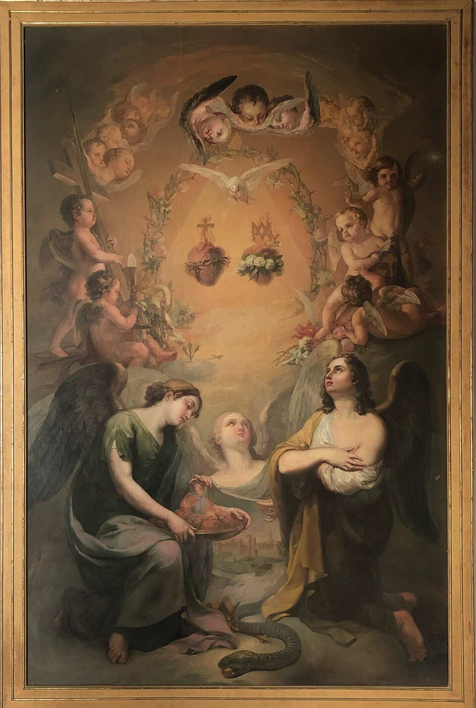
Das Unbefleckte Herz Mariens
Himmlischer Vater, durch das Unbefleckte Herz Mariä opfere ich Dir Jesus, Deinen vielgeliebten Sohn auf, und mich selbst in Ihm, mit Ihm und durch Ihn nach allen Seinen Meinungen und im Namen aller Geschöpfe. Amen. (Aufopferungsgebet)16
Das Leben hat so viel Wert, als Akte der Gottesliebe es erfüllen. Wenn nun die Seele ihre Akte der Immaculata zu Eigen gibt, dann gibt sie dieselben Gott weiter als ihre eigenen. Auf diese Weise empfangen unsere Akte der Liebe zu Gott ihre ganze Schönheit. Hl. P. Maximilian M. Kolbe
15 Imprimatur: Friburgi Helv. 28.12.1959, L. Weber, vic. gen.
16 Ebd.
Papst Johannes Paul II.
Auf den Spuren der Geheimen Offenbarung
Wenige Wochen vor seiner Papstwahl sprach Papst Johannes Paul II. die prophetischen Worte:
Wir stehen vor der größten Schlacht, die die Menschheit je gesehen hat. Ich denke nicht, dass die Gemeinschaft der Christen dies vollends begriffen hat. Wir stehen heute vor dem Endkampf zwischen der Kirche und der Antikirche, zwischen dem Evangelium und dem Antievangelium.17
17 Es wird eine gefälschte Kirche geben. Die eine Kirche wird die Kirche Christi sein und der falsche Prophet wird die andere errichten. Die falsche Kirche wird weltlich sein, ökumenisch und global. Es wird sich um einen losen Zusammenschluss von Kirchen und Religionen handeln. […] Die falsche Kirche wird sämtlicher göttlichen Inhalte entleert sein; sie wird der mystische Körper des Antichristen sein. (Erzbischof Fulton Sheen, Der Kommunismus und das Gewissen der westlichen Welt, Berlin 1950)
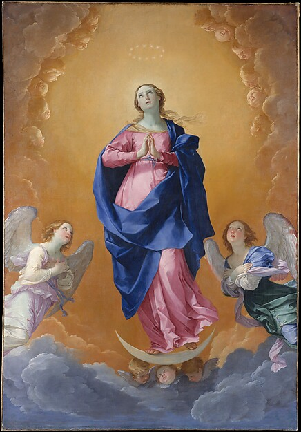
Die Frau mit der Sonne bekleidet
Die Kirche des Erlösers und der Drache
In diesem vergänglichen Leben befinden wir uns in einem geistigen Kampf, der einerseits von Gott und unzähligen Engeln und Heiligen des Himmels und andererseits von Satan und seinem ganzen Anhang mit höchster Aufmerksamkeit verfolgt wird. Nur mit dem entscheidenden Unterschied, dass der Himmel alles daransetzt, uns für die ewige Liebe zu gewinnen und die Hölle uns in den ewigen Hass stürzen will.18
18 Da dieser Feind ein reiner, unkörperlicher Geist ist, den keine Wirksamkeit ermüdet, so ist er in der Verfolgung so eifrig, dass er damit vom ersten Augenblick des Daseins eines Menschen im Mutterschoße beginnt und den Kampf nicht eher aufgibt, als bis die Seele sich vom Leibe trennt. […] Er bedient sich dazu unserer Sinne, Seelenkräfte, Neigungen und Leidenschaften. „Meine Tochter, es ist unmöglich, den Neid, die Bosheit und Arglist Luzifers und seiner Dämonen gegen die Menschen zu beschreiben. […] Gleichwie nun der Himmel sich freut über jedes gute Werk, so herrscht bei den bösen Geistern in der Hölle Freude, wenn die Menschen sündigen." (Leben der Jungfrau und Gottesmutter Maria, Bd. 4, S. 192, S. 209–210)
In der Geheimen Offenbarung beschreibt der hl. Johannes den Kampf Satans19 gegen das Volk Gottes als einen Kampf zwischen einem feuerroten Drachen, (Offb 12,3) dem zur Hilfe kommt ein Tierungeheuer aus dem Meer (Offb 13,1) mit zehn Hörnern und sieben Köpfen, und ein zweites Tier, (Offb 13,11) das aus der Erde heraufkommt, das zwei Hörner wie ein Lamm hat, aber wie ein Drache redet. Sie kämpfen gegen das Volk Gottes, das wie folgt beschrieben wird:
Dann erschien ein großes Zeichen am Himmel, eine Frau, mit der Sonne bekleidet; der Mond war unter ihren Füßen und ein Kranz von zwölf Sternen auf ihrem Haupt. Offb 12,1
Die Kirche, das Volk Gottes, wird durch die heilige Jungfrau Maria, die Mutter der Kirche, symbolisiert. Hier wird der rote Faden vom Anfang der Bibel weitergeführt:
Feindschaft setze Ich zwischen dich und die Frau, zwischen deinem Nachwuchs und ihrem Nachwuchs. Gen 3,15
19 Als die Engel ihren Willen zum Ausdruck brachten, da galt das für immer. Mit ihrem Verstand sahen sie sämtliche Folgen und stimmten ihnen zu. Die Tradition ist der Meinung, dass der Stolz bei Luzifer [Satan] und seinen Anhängern so mächtig war, dass sie das Ego vorzogen – „Ich bin Ich", sagte Luzifer –, und dann, inmitten dieser Prüfung, sagte einer der niedrigsten Engel, Sankt Michael, der zum vorletzten Chor gehörte: „Qui ut Deus?" – „Wer ist wie Gott?" Und mit diesem demütigen Wort warf Sankt Michael Luzifer und seine Anhänger aus dem Himmel in den Abgrund. (Christus vinCit, Bischof Athanasius Schneider im Gespräch mit Diane Montagna, Kißlegg, 2020 S.416)
Dieser Kampf zwischen Satan und Maria wird auf der Erde stellvertretend durch die Kirche und die gottes- und kirchenfeindlichen Mächte, den roten Drachen in Form des marxistischen Kommunismus und den zwei Tieren, der Freimaurerei und der in die Kirche eingedrungenen kirchlichen Freimaurerei, ausgefochten.20 Die Letztere ist das Tier mit den zwei Hörnern, das einem Lamm gleicht, das bis in die Spitzen der Kirche vorgedrungen ist.21 Ihr Hauptziel ist die Zerstörung der römisch katholischen Kirche durch eine falsche Ökumene, mit dem Ziel eine allgemeine Kirche zu gründen, die aus dem Zusammenschluss aller christlichen Konfessionen gebildet wird.22
20 Der hl. P. Maximilian M. Kolbe war einer der entschiedensten Gegner der Freimaurerei und des internationalen Zionismus, weil er deren teuflische Taktik in ihrem Kampf gegen die katholische Kirche klar erkannt hat: Der führende, der größte und der mächtigste Feind der Kirche ist die Freimaurerei. (Maria – Der Eckstein von Dr. med. Hans Salmen, Lauerz 1995, S. 51.)
21 Schon im Jahre 1846 weinte die Gottesmutter in La Salette über den innerkirchlichen Zustand und den großen Glaubensabfall, von dem sie zu den beiden Hirtenkindern sprach: Die Häupter, die Führer des Gottesvolkes, haben das Gebet und die Buße vernachlässigt, und der Dämon hat ihren Verstand verdunkelt. […] Die Zahl der Priester und Ordensleute, die sich von der wahren Religion trennen, wird groß sein; unter diesen Personen werden sich selbst Bischöfe befinden. […] Die Kirche wird eine schreckliche Krise durchmachen. Da der heilige Glaube an Gott in Vergessenheit geraten ist, will jeder einzelne sich selbst leiten und über seinesgleichen stehen. (Ebd. S. 150–153)
22 Diesen beklagenswerten Zustand schaute auch die selige Anna Katharina Emmerich (1774–1824): Sie bauen eine wunderliche Kirche, eine wahre Gemeinschaft von Unheiligen! Der Schafstall brennt an allen Ecken! Und die Hirten! Ich sah eine ungeheure Menge Menschen, die beschäftigt waren, die Peterskirche niederzureißen. Ich sah aber auch andere, die wieder an ihr herstellten. […] Es waren besonders viele Angehörige von Sekten und Abtrünnigen dabei. Wie nach Vorschrift und Regel rissen Leute ab, die weiße, mit blauem Band eingefasste Schürzen mit Taschen trugen und Maurerkellen im Gürtel stecken hatten. […] Zu meinem Entsetzen waren auch katholische Priester bei diesen Freimaurern. (Ebd. S.28)
Das Hauptziel dabei ist die Eliminierung des Heiligen Messopfers, die Abschaffung des Allerheiligsten Altarsakramentes, in dem Jesus Christus mit Gottheit und Menschheit verborgen und verhüllt gegenwärtig ist.23
Die Eucharistie ist der göttliche Blitzableiter, der die Blitze der göttlichen Gerechtigkeit abwendet. So wie eine zärtliche, liebende Mutter ihr Kind an ihre Brust drückt, ihre Arme um es schlingt und es mit ihrem Leib beschirmt, um es vor dem Zorn eines aufgebrachten Vaters zu retten, so vervielfacht Jesus Seine Gegenwart überall. Er bedeckt die Welt und umfasst sie mit Seiner gnädigen Gegenwart. Hl. Peter Julian Eymard
23 Vgl. Der letzte Kampf zwischen Licht und Finsternis von Paul Josef Jakobius, Altötting 2010.
Das Kennzeichen des Tieres
Die Kleinen und die Großen, alle zwang es, auf ihrer rechten Hand oder ihrer Stirn ein Kennzeichen anzubringen. Kaufen oder verkaufen konnte nur, wer das Kennzeichen trug: den Namen des Tieres oder die Zahl seines Namens. […] Seine Zahl ist sechshundertsechsundsechzig (666). Wer das Tier und sein Standbild anbetet und wer das Kennzeichen auf seiner Stirn oder seiner Hand annimmt, der muss den Wein des Zornes Gottes trinken. […] Hier muss sich die Standhaftigkeit der Heiligen bewähren, die an den Geboten Gottes und an der Treue zu Jesus festhalten. Offb 13,16-18; 14,9-12
Schon vor über zweitausend Jahren warnte der hl. Apostel Johannes vor einer allumfassenden Überwachung der Menschheit durch das Tier und seinen falschen Propheten, dessen Name die biblische Zahl 666 ist, jenen, den man auch als Antichrist kennt. Wer im Licht des Heiligen Geistes aufrichtigen Herzens nach der Bedeutung dieser prophetischen Schriftstelle fragt, darf ganz sicher im Blick auf die weltweiten Ereignisse die Wahrheit entdecken. Denn der Plan zur Durchsetzung einer neuen Weltordnung (novus ordo saeculorum)24, die geprägt ist von antichristlichen Gesetzen und Ideologien, verbunden mit einer zunehmenden Überwachung der Menschheit sowie der Einschränkung ihrer Grundrechte, offenbart sich immer deutlicher.
Wenn man sich fragt, warum das Böse in solch bedrohlicher Weise überhand nehmen konnte, dann müssen wir nur einen Blick in die Heilsgeschichte werfen. Sobald sich der Mensch von Gott trennt und sich in die schwere Sünde verstrickt, verlässt er die durch die Gebote gewährleistete Schutzzone Gottes und liefert sich den Machenschaften des Bösen und damit seinem Unheil aus. Schon im Alten Testament klagt Gott schmerzvoll durch den Mund des Propheten:
Ach, hättest du doch Meine Gebote geachtet! Dann gliche dein Friede dem Strom, dein Glück den Wogen des Meeres. Jes 48,18
24 Der Begriff novus ordo saeculorum ist der ideologische und programmatische Code der Eine-Welt-Regierung. Die Freimaurerei formuliert als ihr wesentliches und letztes Ziel die Errichtung eines novus ordo saeculorum, einer neuen gesellschaftlichen und politischen Ordnung auf globaler Ebene, um den Menschen diktatorisch religiöse Gleichgültigkeit und Synkretismus (Vermischung verschiedener Religionen) aufzuzwingen, moralische Pervertiertheit und radikale antichristliche und vor allem antikatholische Politik. Eine solche neue gesellschaftliche Ordnung zielt letztlich auf die Verehrung und Anbetung des Menschen, die radikalste Form des Atheismus. (Christus vinCit, S. 285)
Die meisten Menschen im ehemals christlichen Abendland sind in den letzten Jahrzehnten des Wohlstands blind geworden für den wahren Glauben und haben sich eigene Götter geschaffen: Besitz, Geld, Vergnügen, das selbstsüchtige Ich25 und die endlose Reihe der damit verbundenen Laster und Sünden.26 Nach ihrer Bekehrung erklärte die berühmte Zahnärztin Gloria Polo: Wenn wir sündigen, kaufen wir im Supermarkt des Teufels ein und müssen diese Ware teuer bezahlen.
25 Der hl. Thomas von Aquin erklärt in seiner summ. theol., I-II,q.77,a.4: Ungeordnete Liebe zu sich selbst ist jeglicher Sünde Ursprung. Und für die hl. Caterina von Siena ist die Eigenliebe die Quelle jeden Übels und das Verderben alles Guten. Der Kampf gegen dieses fundamentale Laster durchzieht ihr ganzes Schrifttum. Eigenliebe herrscht dort, wo die Gottesliebe und die Nächstenliebe nicht geübt werden und das Ich im Mittelpunkt steht (Ichsucht, Selbstsucht).
26 Über die Fehlentwicklungen unserer Zeit schreibt Gabriele Kuby: Sie richten sich gegen die Natur des Menschen und gegen die Familie. Kinder werden verhütet; Kinder werden vor der Geburt getötet, wenn sie nicht gewollt sind; Kinder werden im Labor produziert, wenn sie gewollt sind; Kinder werden um ihre Abstammung betrogen; Kinder werden als Embryo eingefroren und von der Forschung verbraucht; Kinder werden in einem gemieteten Mutterleib ausgetragen; Kinder werden von gleichgeschlechtlichen Paaren gekauft und großgezogen; Kinder werden ab dem Säuglingsalter kollektiver Fremdbetreuung ausgeliefert; Kinder werden bereits im Kindergarten sexualisiert; Kinder werden der Pornographie ausgeliefert; Kinder werden zu Scheidungsopfern; Kinder werden ihrer Freiheit beraubt. Eine so geschwächte Gesellschaft hat keine Zukunft – es sei denn, sie kehrt wieder zu Gott zurück. (Kirche heute Nr. 11, 2020, S. 10-12)
Doch die Folgen der Sünde (Leid) trifft auch Unschuldige, die, wie Hiob, die Unschuldigen Kinder von Bethlehem und viele andere, mit dem unschuldigen Lamm Gottes, auf besondere Weise in das Werk der Erlösung einbezogen sind.
Wenn wir uns nun fragen, was wir in dieser äußerst schweren Zeit für uns und stellvertretend für die ganze Menschheit tun können, so rät uns die Heilige Schrift zu dem, was Gott am meisten freut:
Umkehr, Gebet, Buße! Buße heißt, alle täglichen kleinen Kreuze annehmen und auch die Arbeit im Geist der Buße verrichten. Worte der Gottesmutter in Montichiari, 1947
Wenn Mein Volk, über das Mein Name ausgerufen ist, sich demütigt und betet, Mich sucht und von seinen schlechten Wegen umkehrt, dann höre Ich es im Himmel. Ich verzeihe seine Sünden und bringe seinem Land Heilung. 2 Chr 7,14
Auch stellt sich die Frage, was geschieht mit den Gläubigen, die sich den antichristlichen und diktatorischen Gesetzgebungen nicht unterwerfen und deshalb im gesellschaftlichen Leben sanktioniert werden?
Die Bibel gibt dazu die Antwort: Geh, miss den Tempel Gottes und den Altar und zähl alle, die dort anbeten! Den Hof, der außerhalb des Tempels liegt, lass aus und miss ihn nicht, denn er ist den Heiden überlassen. Sie werden die Heilige Stadt zertreten, zweiundvierzig Monate lang. (Offb 11,1-2)
Dass der Tempel vermessen und die Anbetenden gezählt werden, bedeutet, dass in der Verfolgung der Endzeit die christliche Gemeinde, die kleine Herde, die übrigen Nachkommen Mariens, unter dem besonderen Schutz Gottes stehen wird. (Vgl. Offb 12,17)
Vieles deutet auch daraufhin, dass sich in dieser Zeit ähnliche Wunder ereignen werden, wie sie die Israeliten bei ihrem Auszug aus Ägypten erleben durften.27
Alle sollen sich freuen, die auf Dich vertrauen, und sollen immerfort jubeln. Beschütze alle, die Deinen Namen lieben, damit sie Dich rühmen. Ps 5,12
27 Vgl. Der letzte Kampf zwischen Licht und Finsternis.
Wenn du krank bist und Schmerzen hast, wenn du von sündhaften Gedanken und Zweifeln geplagt wirst, so sprich entweder den Namen Jesus kräftig aus oder denke Ihn. In Gefahren, bei Erschrecken, im Haus oder auf dem Weg, wo immer du dich befindest, sprich den Namen Jesus, den Namen unseres Erlösers aus, aber nicht nur mit dem Mund, sondern auch mit dem Herzen und mit Ehrfurcht, denn dieser Name verleiht Kraft. Hl. Laurentius Justiniani
In der Armee Unserer Lieben Frau
Die Frau mit der Sonne bekleidet, wie sie in der Geheimen Offenbarung beschrieben wird, schreitet als Urbild und Mutter der Kirche an der Spitze der Armee gegen die feindlichen Mächte. Mit mütterlicher Liebe beschützt sie ihre Kinder, die noch mitten in der Prüfungszeit dieses irdischen Lebens stehen. Doch dürfen wir nicht vergessen, dass Maria in dieser großen Schlacht, in der es um die Rettung so vieler unsterblicher Seelen geht, auch unserer Mithilfe bedarf.
Im September 1961 brachte der Postulator des Seligsprechungsprozesses von Jacinta und Francesco eine wichtige Botschaft von Sr. Lucia, die er mit Erlaubnis des Heiligen Vaters im Carmel von Coimbra besuchte. Sr. Lucia war sehr betrübt und sprach über die tiefe Traurigkeit der Gottesmutter, weil sich so wenige um ihre Botschaft von 1917 kümmern. Selbst die Gläubigen beachten ihre Weisungen zu wenig und die Bösen gehen weiter auf dem Weg des Verderbens. Pater, sagen sie allen, was die Gottesmutter mir oft gesagt hat: Viele Nationen werden vom Antlitz der Erde verschwinden. Russland wird die Geißel sein, die Gott erwählt, um die Menschen zu strafen, wenn wir mit unserem Gebet und den Sakramenten nicht die Gnade zur Umkehr erlangen.28 Weiter erklärte die Gottesmutter Sr. Lucia, dass die letzten Hilfsmittel, die der Welt gegeben sind, der Rosenkranz29 und die Verehrung ihres Unbefleckten Herzens sind. In diesen Worten der Gottesmutter leuchtet uns die Kernbotschaft von Fatima wieder neu auf: Man soll Gott, unseren Herrn, nicht mehr beleidigen, der schon so sehr beleidigt worden ist. (13. Oktober 1917)
Der Rosenkranz bewirkt das Wiederaufblühen der Tugend und der Werke der Gottseligkeit. Durch ihn wird den Seelen die Fülle der göttlichen Erbarmungen zuteil. Er wird die Herzen umkehren, und sie werden anfangen, das Irdische zu verachten, das Himmlische zu lieben und rasche Fortschritte zu machen. Viele Seelen werden durch den Rosenkranz gerettet. Aus den Verheißungen der Gottesmutter an den seligen Alanus Rupe
Es ist Mein sehnlichster Wunsch, dass die Verehrung und die Andacht zum Unbefleckten Herzen Mariens verbreitet wird, weil dieses Herz der Magnet ist, der die Seelen zu Mir hinzieht, der Feuerherd, der die Strahlen Meines Lichtes und Meiner Liebe über die ganze Erde hinaussendet und die unversiegliche Quelle, welche die lebendigen Wasser Meines Erbarmens auf die Erde herabströmen lässt. Worte unseres Herrn Jesus Christus an Sr. Lucia
28 Wisse, meine Tochter, dass alle der heiligen Kirche anvertrauten Sakramente, insbesondere die Heilige Eucharistie, gewaltige Waffen sind, um die höllischen Anschläge zu vereiteln und alle Teufel in Schrecken zu versetzen. Gerade deshalb setzte mein heiligster Sohn sie ein. Wenn aber heute die Seelen diese Kraft und Wirkung nicht mehr erfahren, so liegt der Grund darin, dass ihnen die rechte Ehrfurcht und Hochschätzung fehlt, womit sie dieselben behandeln und empfangen sollten. Sei versichert: Jene Seelen, welche die heiligen Sakramente mit Andacht und Ehrfurcht empfangen, sind den höllischen Geistern furchtbar. Sie besitzen eine große und mächtige Gewalt über den Satan. (Leben der Jungfrau und Gottesmutter Maria, Bd. 4, S. 351)
29 Als Kardinal Kracziwitz 1981 mit einigen Priestern und Gläubigen zur Audienz bei Papst Johannes Paul II. war, zog der Heilige Vater den Rosenkranz heraus und sagte: „Das ist der Exorzismus, den auch die Laien beten können." Die Anwesenden waren überrascht – da sagte der Papst: „Damit kein Zweifel besteht: Ich verleihe dem Rosenkranz die Macht des Exorzismus!"
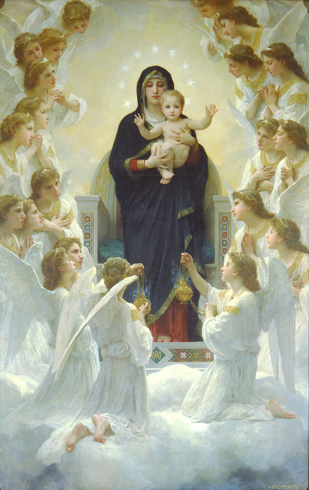
Maria, Königin der heiligen Engel
Zur Königin der heiligen Engel
Hehre Königin des Himmels und höchste Herrin der Engel, Du hast von Anbeginn von Gott die Macht und den Auftrag, den Kopf des Satans zu zertreten. Deshalb bitten wir Dich demütig, sende uns die himmlischen Legionen zu Hilfe, damit sie unter Deiner Führung die Dämonen verfolgen, sie überall bekämpfen, ihre vermessenen Angriffe abwehren und sie in den Abgrund zurückschleudern. Wer ist wie Gott? O gute und milde Mutter, Du wirst immer unsere Liebe und unsere Hoffnung sein! O Muttergottes, sende uns die heiligen Engel, damit sie uns verteidigen und den bösen Feind von uns fernhalten. Ihr heiligen Engel und Erzengel, verteidigt und schützet uns! Amen.30
30 Am 13. Januar 1864 wurde der Gründer der Kongregation der Dienerinnen Mariens, P. Cestac (1801–1868), im Heiligtum Unserer Lieben Frau von der Zuflucht in Anglet (Pyrenäen) plötzlich wie von einem Strahl göttlicher Klarheit erschüttert. Er sah die Dämonen auf der ganzen Welt verbreitet und überall unaussprechbaren Schaden anrichten. Gleichzeitig hatte er eine Vision der Allerseligsten Jungfrau Maria, die ihm sagte, dass die Dämonen in der Tat auf der ganzen Welt entfesselt seien. Deswegen sei die Stunde gekommen, sie als Königin der Engel anzurufen und sie zu bitten, Legionen heiliger Engel zu senden, um die Mächte der Unterwelt zu bekämpfen. „Meine Mutter" sagte der Priester, „Ihr seid so gut, könntet Ihr sie nicht schicken, ohne dass man darum bittet?" – „Nein", antwortete die Allerseligste Jungfrau, „das Gebet ist eine Bedingung, die von Gott gestellt wird, auch wenn man Gnaden erhalten möchte". – „Wenn es so ist, meine Mutter, würdet Ihr uns dann lehren, wie man beten muss?" Daraufhin erhielt er von der Allerseligsten Jungfrau das Gebet „Hehre Königin", und verbreitete es nach der bischöflichen Gutheißung auf der ganzen Welt. Dieses von außergewöhnlichen Gnaden begleitete Gebet wurde von Papst Pius IX. empfohlen und von Leo XIII. und Pius X. durch die Gewährung eines vollkommenen Ablasses bereichert.
Wenn du erfährst, dass dieses Erdenleben mehr ein Dahintreiben in Wellen, Wind und Wetter ist als ein Dahinschreiten auf festem Land: wende deine Augen nicht ab vom Licht dieses Sternes, damit du nicht untergehst in den Stürmen.
Wenn die Sturmwinde der Versuchungen daher brausen, wenn du zwischen die Klippen der Drangsale verschlagen wirst, blick auf zum Stern, ruf zu Maria! Wenn dich emporschleudern Wogen des Stolzes, des Ehrgeizes, der Verleumdung, der Eifersucht – blick auf zum Stern, ruf zu Maria!
Wenn Zorn, Habsucht oder die Begierde des Fleisches deine Seele erschüttern – blick auf zu Maria!
Wenn dich die Last der Sünden drückt und die Schmach des Gewissens beschämt, wenn dich die Strenge des Gerichtes schreckt, wenn du drohst von abgrundtiefer Traurigkeit und Verzweiflung verschlungen zu werden, denk an Maria!
Hält sie dich fest, wirst du nicht fallen. Schützt sie dich, dann fürchte nichts. Führt sie dich, wirst du nicht müde. Ist sie dir gnädig, dann kommst du ans Ziel und wirst selbst erfahren, wie richtig es heißt: Und der Name der Jungfrau war Maria – Stern des Meeres.
Hl. Bernhard von Clairvaux
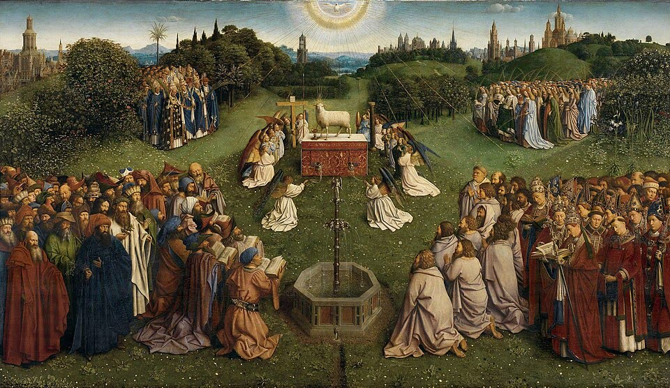
Das Lamm auf dem Berg Zion
Das Reich des Lammes
Und ich sah: Das Lamm stand auf dem Berg Zion, und bei Ihm waren hundertvierundvierzigtausend, auf ihrer Stirn trugen sie Seinen Namen und den Namen Seines Vaters. Offb 14,1
Die Zahl der 144.000 symbolisiert die Gesamtheit derer, die gerettet werden und weist auf jene Christen hin, die dem Lamm folgen wohin Es geht, das heißt, sie führen ein Leben in der Nachfolge Christi. 12 ist die Zahl der Stämme Israels, 1000 die Zahl der Fülle. Auf ihrer Stirn sah Johannes den Namen Seines Vaters geschrieben, dort, wo die Diener des Tieres das Kennzeichen des Tieres trugen. Der hier geschaute Name des Lammes Jesus, dessen Zahl 888 ist, steht im Gegensatz zu den Anbetern des Tieres, welche die Zahl 666 auf ihrer Stirn hatten. Als Name des Vaters wird Johannes den Namen Jahwe (Der Seiende) auf ihrer Stirn geschaut haben. Die Namen auf der Stirn sind Symbole für die Hingabe der Christen an Gott und Christus. Das aufgeprägte Siegel ist also der gläubig angenommene und darum der das Denken (Stirn) prägende Akt der Taufe. Darum ist hier auch angespielt auf die christliche Taufe, die auf den Namen des Vaters und des Sohnes und des Heiligen Geistes erfolgt. (Mt 28,19)
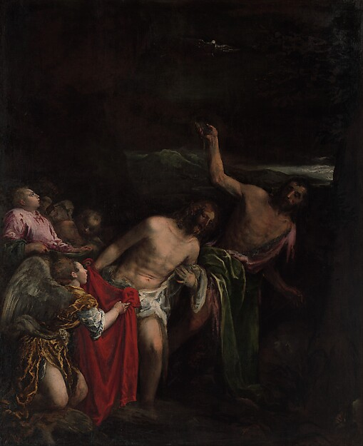
Die Taufe Christi im Jordan
Sie sind es, die sich nicht mit Weibern befleckt haben, denn sie sind jungfräulich. Sie folgen dem Lamm, wohin Es geht. Sie allein unter allen Menschen sind freigekauft als Erstlingsgabe für Gott und das Lamm. Offb 14,4
Der Begriff „Hure" steht in der Apokalypse für das götzendienende Rom. Daher bedeutet der Gegenbegriff „Jungfrau" das treue christliche Volk, das sich mit Christus einst „vermählen" wird. „Jungfrau" ist hier also eine geistige Bedeutung: Gemeint sind alle Christen, ob verheiratet oder unverheiratet, die als Erstlingsfrucht im Sinne der Qualität nicht auf die Zeit bezogen in treuer Hingabe auf ihre einstige „Vermählung mit Gott" hinleben, ohne durch Seitenblicke oder Kompromisse „Unzucht" mit den heidnischen Göttern zu begehen. (Vgl. Dtn 5,6) Sie liebäugeln weder mit der falschen ökumenischen Kirche, noch lassen sie sich von esoterischen Strömungen oder anderen Religionen beeinflussen.31
31 Vgl. Die Offenbarung des Johannes von Dr. Ludwig Neidhart, Augsburg 2019.
Wenn uns die Heilige Schrift verheißt: Unsere Hilfe ist im Namen des Herrn, der Himmel und Erde erschaffen hat, (Ps 124) so dürfen wir fest darauf vertrauen, dass Gott uns in diesem geistigen Kampf die Gnade verleihen wird, Ihm treu zu bleiben und uns mutig zum wahren katholischen Glauben zu bekennen. Je mehr also der Name Gottes gelästert und verunehrt wird, umso mehr wollen wir durch ein christliches Leben den Heiligsten Namen des Herrn verherrlichen und Ihn vertrauensvoll anrufen.
Und wenn wir sehen oder hören, wie man Böses sagt oder tut oder Gott lästert, dann wollen wir Gutes sagen und Gutes tun und Gott loben, der gepriesen ist in Ewigkeit. Hl. Franziskus
Der Goldene Pfeil
Es sei immerdar gelobt, gepriesen, geliebt, angebetet und verherrlicht der allerhöchste, anbetungswürdigste und unaussprechliche Name Gottes im Himmel, auf Erden und unter der Erde, von allen Geschöpfen, die aus Gottes Hand hervorgegangen sind, und durch das Allerheiligste Herz Jesu im Allerheiligsten Sakrament des Altares. Amen.32
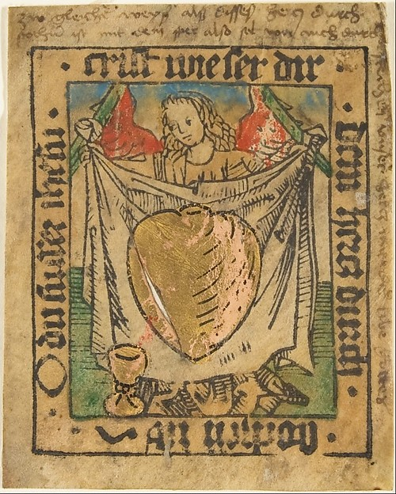
Die Verehrung des Heiligsten Herzens Jesu
Ablassgebet zum Heiligsten Namen Jesu
Guter Jesus, nach Deiner großen Barmherzigkeit erbarme Dich meiner! Mildreicher Jesus, durch das Kostbare Blut, das Du für die Sünder vergossen hast, bitte ich Dich: Wasche mich rein von allen meinen Missetaten und siehe in Gnaden auf mich armen, unwürdigen Menschen! Ich rufe Deinen Heiligsten Namen an. So rette mich denn, lieber Jesus, um Deines Heiligsten Namens willen. Amen.
32 Der göttliche Heiland sagte einst zur gottseligen Sr. Maria vom hl. Petrus: „Die Gotteslästerung ist ein vergifteter Pfeil, der Mein Herz verwundet. Ich will dir einen Goldenen Pfeil geben, der die Verunehrung und Lästerung des Heiligsten Namens Gottes sühnt." Nachdem Schwester Maria vom hl. Petrus dieses Gebet empfangen hatte, erhielt sie eine göttliche Vision, in der sie das Heiligste Herz Jesu zärtlich verwundet sah durch diesen Goldenen Pfeil. Dabei brachen Ströme von Gnaden aus Ihm hervor zur Bekehrung der Sünder. Anwendung des Gebetes: Wird dreimal gebetet zu Ehren der Allerheiligsten Dreifaltigkeit; Teilablass, 15. April 1881, entnommen aus: Handbuch der Erzbruderschaft vom Heiligsten Antlitz Unseres Herrn nebst dem kleinen Offizium vom Heiligsten Namen Gottes von Abbé Désiré Janvier, aus dem Französischen übersetzt, Tours 1887, S. 186.
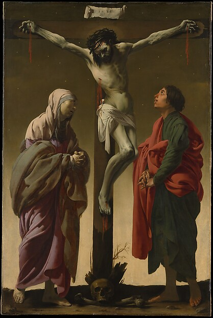
Kreuzigung Christi
Die Passion des mystischen Leibes Jesu
Betet für die Kirche, für die Welt, für alle. Die ganze Christenheit ist ins Jesusgebet hineingenommen. Wenn ihr nur für euch selber betet, bedeutet es, dass ihr nicht selbstlos seid. Wenn ihr aber für die Kirche betet, seid ihr selber die Kirche. In der Kirche befindet sich Christus, mit ihr vereint, sowie mit dem Vater und dem Heiligen Geist. Die Heiligste Dreifaltigkeit und die Kirche sind eins. Hl. Geronta Porphyrius
Die auf Petrus gebaute Kirche ist die einzige, die Jesus gegründet hat. Und weil das so ist, wird sie kritisiert, verfolgt und angegriffen. Über diese Tatsache spricht Blaise Pascal in seinen Pensées: Jesus wird bis zum Ende der Welt in Agonie sein. Wir dürfen in dieser Zeit nicht schlafen.
Der bisherige Glaubensabfall ist nur die Spitze des Eisberges. Der große Glaubensabfall kommt dann, wenn es der freimaurerischen falschen Ökumene gelingt, die Gläubigen vom Lehramt der katholischen Kirche abzuspalten. Dann wird das Tor weit geöffnet sein für das Erscheinen des Menschen mit der Zahl 666, weil fast alle dem falschen Christus und der falschen Kirche folgen werden.
Der mystische Leib Jesu wird das gleiche Schicksal erleiden wie der Herr selbst: Verfolgung, Verachtung, Kreuzigung, Tod, aber auch Auferstehung. Den gleichen Weg geht die Kirche. Es wird die große Reinigung der Welt, Menschheit und Kirche sein, es wird aber auch gleichzeitig das neue Pfingsten sein.33
In seinem neuen Buch Christus vincit schreibt Weihbischof Athanasius Schneider:
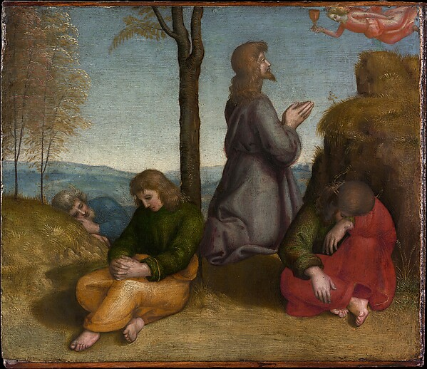
Christus am Ölberg, von einem Engel gestärkt
Von den Umständen der Passion Christi her können wir den geistlichen, ja mystischen Sinn der Leiden der Braut Christi, der Kirche, verstehen. Die gegenwärtige Krise innerhalb der Kirche ist die tiefste Form des Leidens, weil die Kirche jetzt nicht von ihren Feinden verfolgt, gegeißelt, ihrer Kleider beraubt und verspottet wird, sondern in hohem Maße von ihren Hirten, von vielen, die Nachfolger der Apostel sind.34 […]
Als Christus in Gethsemani litt, wurde Er von einem Engel gestärkt. Das ist ein tiefes Geheimnis: Gott in Seiner Menschennatur wollte von einem Geschöpf getröstet und gestärkt werden. In dieser gewaltigen geistlichen Krise, die wir innerhalb der Kirche erleben, wird Christus getröstet und gestärkt von Seelen, die dem unverfälschten katholischen Glauben treu bleiben, von Seelen, die den leidenden Christus, die leidende Mutter Kirche nicht im Stich lassen, nicht davonlaufen.
Die Tröstung und die Stärke, die Christus vom Engel in Gethsemani empfing, sie enthielten bereits all die Akte der Sühne und Genugtuung aller gläubigen Seelen in der gesamten Geschichte der Kirche. So viele Seelen leiden gegenwärtig, vor allem in den vergangenen fünfzig Jahren, wegen der ungeheuerlichen Krise der Kirche.
34 Unsere Kirchenmauern triefen vom Geheimnis des Verrats … Wir erleben das Geheimnis der Bosheit, des Verrates – das Geheimnis des Judas … Überall hat sich das Übel eines auf Effizienz erpichten Aktivismus eingeschlichen … Wir versuchen, die Organisation großer Unternehmen nachzuahmen, und vergessen dabei, dass allein das Gebet das Blut ist, welches durch die Adern der Kirche fließt … Wer nicht mehr betet, hat schon Verrat begangen. Er ist schon zu sämtlichen Kompromissen mit der Welt bereit: unterwegs in den Spuren des Judas. (Kardinal Robert Sarah, Herr, bleibe bei uns, Kißlegg 2019)
Am kostbarsten sind die verborgenen Leiden der Kleinen, jener Personen, die vom liberalen, weltlichen und ungläubigen kirchlichen Establishment an den Rand der Kirche geschoben wurden. Ihre Leiden sind kostbar, denn sie trösten und stärken Christus, der in unserer gegenwärtigen Krise in der Kirche mystisch leidet. […]
Kinder, Jugendliche, Familien, Ordensmitglieder, Priester, Bischöfe und Kardinäle, wenn sie Christus treu bleiben, wenn sie den katholischen Glauben unverfälscht bewahren, wenn sie ein Leben der Keuschheit und Demut leben, dann sind sie die Reinen und Kleinen in der Kirche. Die folgenden Worte des heiligen Paulus, die auf die Seele der Einzelnen bezogen sind, beziehen sich genau auf die Kirche und vor allem auf die Kirche unserer Tage: Wenn wir mit Ihm leiden, werden wir auch mit Ihm verherrlicht werden. (Röm 8,17)35
Euer brennender Wunsch muss dieser sein: dass die Welt geheiligt werde und dass alle Menschen zu Christus gehören. Dann werdet ihr in die Kirche eintreten, ihr werdet in der Freude des Paradieses leben, in Gott, denn die Fülle der Gottheit lebt in der Kirche. Hl. Geronta Porphyrius
35 Christus vincit, S. 440-443.
Schutzengel mit Kindern
In der Schule der heiligen Engel
Ich werde einen Engel schicken, der dir vorausgeht. Er soll dich auf dem Weg schützen und dich an den Ort bringen, den Ich bestimmt habe. Achte auf ihn, und höre auf seine Stimme! Widersetz dich ihm nicht! Er würde es nicht ertragen, wenn ihr euch auflehnt; denn in ihm ist Mein Name gegenwärtig.36 Ex 23,20-22
36 Mein persönlicher Schutzengel wurde nur mir gegeben und er ist ein sehr mächtiges geistiges Wesen, das immer in der Gegenwart Gottes ist und das während der Prüfung der Engel Gott treu blieb, als einige seiner Brüder mit Luzifer von Gott abfielen. Mein Schutzengel und jeder Schutzengel anerkannte Christus im Geist der Demut und des Dienens. Deshalb sehnt sich jeder Engel glühend danach, eines Tages ein demütiger, dienender Schutzengel eines menschlichen Wesens zu werden. Jeder Engel träumt davon, sich zu verneigen. Seine „Traumkarriere" besteht darin, klein zu sein, abzusteigen und nicht aufzusteigen, wie es sich in der Regel die Menschen in ihren Karriereträumen ersehnen. (Christus vincit S. 416, 417)
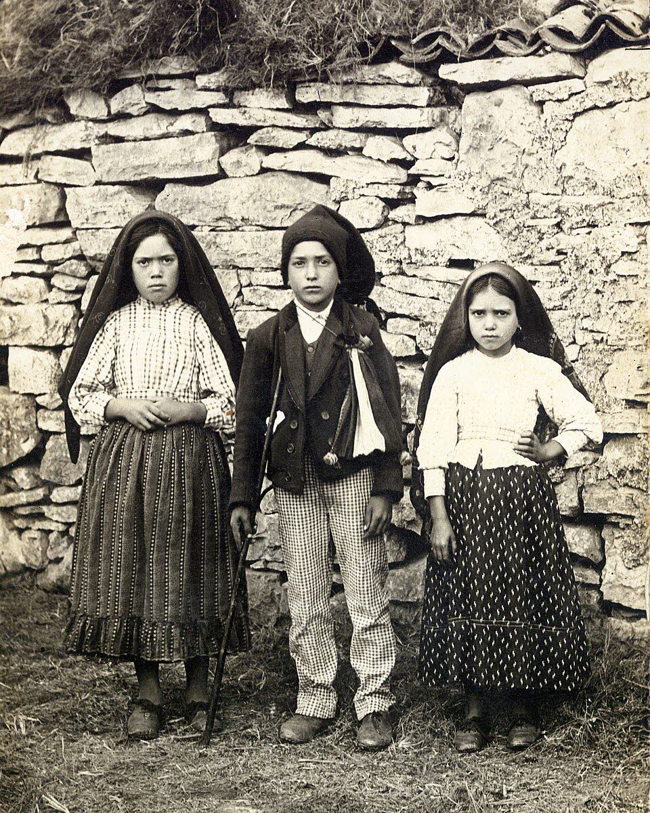
Die drei Hirtenkinder von Fatima: Lucia, Francisco und Jacinta
Was macht ihr?
Bevor Maria im Jahr 1917 in Fatima erschienen ist, wurden die drei Seherkinder Lucia, Francesco und Jacinta im Jahre 1916 durch einen dreimaligen Besuch von einem Engel des Herrn auf diese große Gnade vorbereitet. Bei seiner zweiten Erscheinung sprach der Engel zu den im Spiel versunkenen Kindern die prägnanten Worte:
„Was macht ihr?" Dieses „Was macht ihr?" aus dem Mund des Engels ist außerordentlich tiefgründig und enthält für einen jeden von uns eine gewaltige Botschaft und eine alles entscheidende Frage:
Was machen wir mit unserem Talent des Lebens? Verspielen wir dieses Geschenk im Sandkasten der Vergänglichkeit oder spielen wir vor Gott das wahre Lied der Liebe wie Maria, die Gottesmutter von der es heißt:
Es war meine Wonne, Tag für Tag vor Ihm zu spielen … Sprüche 8,30
Das ist ein Wort, das sich wie ein Regenbogen hoch über den Himmel unserer Begriffe spannt, und wohl nur ein Geist, der hoch und weit fliegen kann, wird dieses Wort klar erkennen. Unter „Spielen" können wir Menschen im übertragenen Sinn das Erfreuen Gottes, das Entzücktsein Gottes an Maria schon durch ihr Sein vor Gott verstehen. Sie ist wie ein tausendfach leuchtender Kristall, der an jeder Schnittfläche eine andere Perspektive ergibt, welche Engel und Mensch in Jubel und Anbetung Gottes ausbrechen lassen.
Und wenn wir dieses Wort auf die Erde herabzwingen und richtig verstehen wollen, so können wir sagen, dass das, was für Maria, die Sündenlose, ein „Spielen" war, uns doch rechte Mühe kostet und für uns Menschen übersetzt heißen müsste: „Es ist unsere Wonne, Tag für Tag zu sein vor Gott in Anbetung und in rastlosem Eifer für alles Gute, Gottgewollte und zu Gott Hinführende!" Wenn wir so immer nur an Gott denken wollen, immer Ihn erfreuen wollen durch einen kleinen Liebesbeweis – in Form eines froh getragenen Opfers, in Form einer neuen Gabe und immer wieder zu Ihm zurückkehren wie der Ball in die Hand des Kindes, dann ist auch unser Leben ein liebendes Sein vor Gott, ein Spielen des Kindes an der Hand der Mutter Maria. Was ist denn unser Tun hier auf der kleinen Erde an der Ewigkeit gemessen, sieht es nicht wie ein Spielen aus?
Aber Gott nimmt dies unser „Spielen" sehr ernst. Er hat uns einen Engel für Schritt und Tritt zur Seite gegeben, damit unser Fuß nicht strauchle, und er „spielt" vor Gott, er spielt das Lied unseres Lebens, unserer Liebe zu Gott, er singt für uns das Gloria und das Credo und das Sanctus, das Agnus Dei und das Domine non sum dignus, er spielt auf der Harfe unseren Jubel. Jede Wesensart von uns ist eine Saite. Wenn sie für Gott anklingt, trägt unser Engel unseren Willensakt, zu einem Ton umgewandelt, wie ein Lied unserem Herrn vor: unsere Liebe, unser Streben, unser Gehorsam, unsere Bereitschaft, unser Ja-Sagen, unser Schweigen und Verzeihen.
Und nun noch einmal zurück zur Frage des Engels „Was macht ihr?" und seinem ganz konkreten Auftrag an einen jeden von uns:
Betet, betet viel! Die Herzen Jesu und Mariens haben mit euch Pläne der Barmherzigkeit. Bringt dem Allerhöchsten unaufhörlich Gebete und Opfer dar.
Macht aus allem, was ihr könnt, ein Opfer, um die Sünden gutzumachen, durch die Er beleidigt wird und um die Bekehrung der Sünder zu erflehen. […] Vor allem nehmt das Leid an und ertragt in Ergebung, was der Herr euch schicken wird.
Ich will Dir danken, Herr, mein Gott, aus ganzem Herzen, will Deinen Namen ehren immer und ewig. Ps 86,12
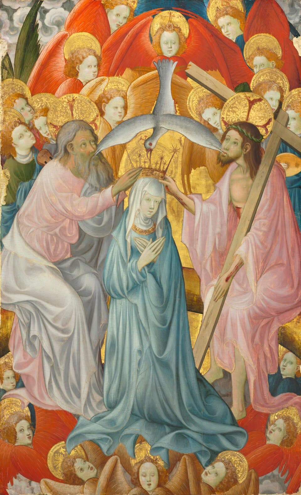
Chöre der heiligen Engel
Preisgebet der heiligen Engel zur Heiligsten Dreifaltigkeit
Heil Dir, ewiger Herrscher, lebendiger Gott, allzeit Gewesener, furchtbarer und gerechter Richter, immer gütiger und barmherziger Vater! Dir werde neu und allezeit Anbetung, Lobpreis, Ehre und Herrlichkeit durch Deine sonnengehüllte Tochter, unsere wunderbare Mutter!
Heil Dir, geopferter Gottmensch, blutendes Lamm, König des Friedens, Baum des Lebens, Du unser Haupt, Tor zum Herzen des Vaters, ewig aus dem Lebenden Geborener, in Ewigkeit mit dem Seienden herrschend! Dir werde neu und allezeit Macht und Herrlichkeit und Größe und Anbetung und Sühne und Preis durch Deine makellose Gebärerin, unsere wunderbare Mutter!
Heil Dir, Geist des Ewigen, allzeit Heiligkeit Strömender, seit Ewigkeit wirkend in Gott! Du Feuerflut vom Vater zum Sohn, Du brausender Sturm, der Du wehest Kraft und Licht und Glut in die Glieder des ewigen Leibes. Du ewiger Liebesbrand, gestaltender Gottesgeist in den Lebenden, Du roter Feuerstrom vom Immerlebenden zu den Sterblichen! Dir werde neu und allezeit Macht und Herrlichkeit und Schönheit durch Deine sternengekrönte Braut, unsere wunderbare Mutter!37
37 Dieses wunderbare Preisgebet wurde von einer unübersehbaren Schar heiliger Engel bei der letzten Erscheinung der Gottesmutter in Marienfried am 25.6.1946 gebetet. Imprimatur: Augsburg, 27.10.1966. „Es ist ein Echo jenes apokalyptischen Gesanges, den die große Schar, die niemand zu zählen vermag, mit den Engeln und den Ältesten, niedergeworfen vor dem Thron, betet." (Aus einer Festpredigt von Bischof Dr. Rudolf Graber in Marienfried)
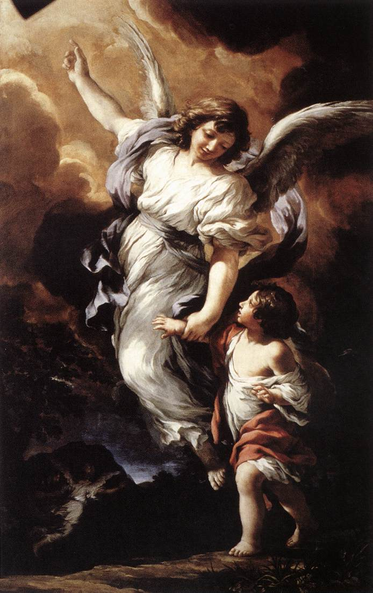
Schutzengel führt ein Kind (Gemälde von Pietro da Cortona)
Schutzengelweihe
Heiliger Schutzengel, der du stets das Angesicht unseres Vaters im Himmel schaust, dir hat Gott mich von Anbeginn meines Lebens anvertraut. Von Herzen danke ich dir für deine liebevolle Fürsorge. Dir übergebe ich mich und verspreche dir meine Liebe und Treue. Ich bitte dich, schütze mich gegen meine eigene Schwachheit und gegen die Angriffe der bösen Geister. Erleuchte meinen Geist und mein Herz, um den Willen Gottes immer zu erkennen und zu erfüllen; und führe mich zur Vereinigung mit Gott, dem Vater, dem Sohn und dem Heiligen Geist. Amen.38
38 Die Hauptaufgabe der heiligen Engel ist der Lobpreis Gottes. Sie sind aber auch von Ihm beauftragt, die gewaltige Schlacht gegen Satan und alle bösen Geister zu führen, unter dem Befehl der heiligsten Jungfrau. Ihre Stellung ist demnach wesentlich in den siegreichen Plänen der von der Sonne umkleideten Frau gegenüber dem roten Drachen: Betrunken vom Blut der Heiligen und vom Blut der Zeugen Jesu. (Off 17,6) Und da sie im Kampf stets an unserer Seite sind, um uns Kraft und Mut zu geben, unsere Wunden zu verbinden und uns gegen den Bösen zu verteidigen, ist es wichtig, immer in ihrer Begleitung zu bleiben.
Komm, Herr Jesus – Maranatha! Offb 22,20
Der Heiligste Name Jesus sei in meinem Herzen, Er sei in meinem Munde, Er sei auf meiner Zunge.
Der Heiligste Name Jesus erleuchte meinen Verstand, reinige meine Phantasie, stärke meinen Willen!
Der Heiligste Name Jesus sei in mir, Er sei über mir, Er sei vor mir, Er sei neben mir, Er sei in allen meinen Gedanken, Worten und Werken.
Der Heiligste Name Jesus sei mein Schutz wider alle bösen Anfälle und Versuchungen.
Der Heiligste Name Jesus bewahre mich vor allen schweren Gedanken, vor aller Mutlosigkeit und Verzagtheit.
Der Heiligste Name Jesus sei mein unerschütterliches Vertrauen, meine Kraft und Stärke, meine Hoffnung und Zuversicht im Leben und im Sterben! Amen.
Sie werden Sein Angesicht schauen, und Sein Name ist auf ihre Stirn geschrieben. Es wird keine Nacht mehr geben, und sie brauchen weder das Licht einer Lampe noch das Licht der Sonne.
Denn der Herr, ihr Gott, wird über ihnen leuchten und sie werden herrschen in alle Ewigkeit. Offb 22,4-5